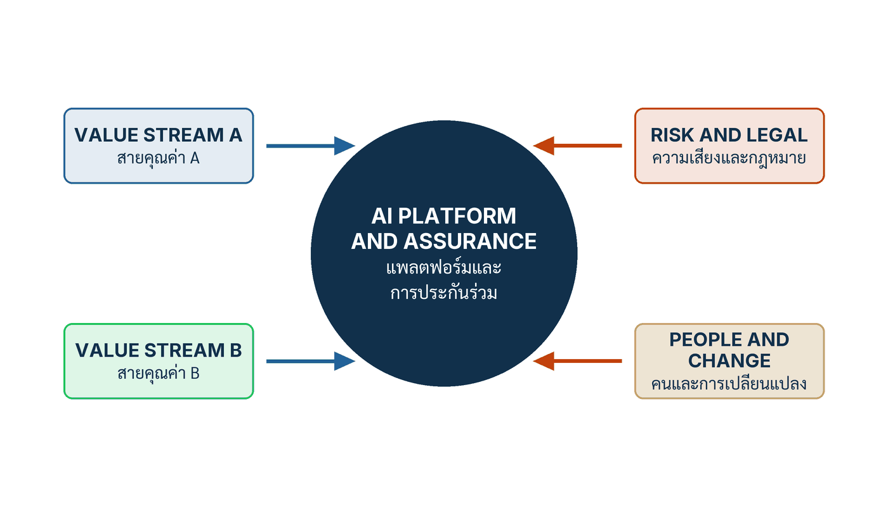

ในบทความนี้
- สองทางที่ไปไม่รอด — CoE ที่สร้างทุกอย่าง กับทีมโดเมนที่เลือกเองทั้งหมด
- โมเดลแบบสหพันธ์ — ศูนย์กลางเจ็ดอย่าง โดเมนห้าเรื่อง และหน่วยความเสี่ยงที่เป็นอิสระ
- สี่คำกริยา กำหนดมาตรฐาน สร้าง อนุมัติ ดำเนินงาน และคณะกรรมการพอร์ต
- แปดบทบาทเจ้าของต่อผลิตภัณฑ์ AI หนึ่งตัว และกฎหนึ่งคุณสมบัติหนึ่งเจ้าของ
- บันไดสามระดับ AI project → AI capability → AI operating model
- ผนังสิทธิ์ตัดสินใจ — สิบเอ็ดขั้น ห้าคอลัมน์ สามสถานการณ์ทดสอบ และการทดสอบห้านาที
- ตัวชี้วัดสำคัญสิบสองตัวพร้อมช่อง Scorecard และรูปแบบความล้มเหลวเจ็ดแบบ
- ก้าวต่อไป — จาก "ใครอนุมัติ" สู่คำถามว่าอนุมัติ "อะไร"
In this post
- Two roads that do not last — the CoE that builds everything, and every domain choosing for itself
- The federated model — seven things at the centre, five in the domains, and an independent risk function
- Four verbs — set standards, build, approve, operate — and the portfolio council
- Eight owner roles for one AI product, and the rule of one owner per property
- The three-level ladder: AI project → AI capability → AI operating model
- The decision-rights wall — eleven stages, five columns, three stress tests and the five-minute test
- Twelve metrics that matter with a Scorecard column, and seven failure patterns
- The road ahead — from "who approves" to the question of what is being approved
🤔 ลองถามในที่ประชุมพรุ่งนี้ว่า "ใครเป็นคนตัดสินใจเปลี่ยน corpus ของนโยบายคืนเงิน" — ถ้าห้องเงียบเกินห้านาที องค์กรของคุณมีรูปแบบการดำเนินงานอยู่จริงหรือยัง?
ตอนที่แล้ว The AI and Data Factory จบลงที่โรงงานซึ่งผลิตของใช้ซ้ำได้หกอย่าง — data products, context services, model services, evaluation services, tool registry และ observability — พร้อมข้อสังเกตค้างไว้ว่าโรงงานไม่ได้เดินเองได้ มันต้องมีคนกำหนดมาตรฐานให้ มีคนลงมือสร้าง มีคนอนุมัติให้ออกใช้ และมีคนดูแลตอนมันทำงานจริง ตอนนี้คือตอนที่ตอบว่า "คน" เหล่านั้นคือใคร และจะเขียนมันลงบนกระดาษอย่างไรให้ตอบได้ภายในห้านาที
คำตอบสั้น ๆ ของทั้งบทความคือ โมเดลการดำเนินงานแบบสหพันธ์ (federated operating model) — ศูนย์กลางเป็นเจ้าของรากฐานและรางที่ใช้ซ้ำได้ ทีมโดเมนเป็นเจ้าของความหมายทางธุรกิจและผลลัพธ์ หน่วยความเสี่ยงที่เป็นอิสระทำหน้าที่ท้าทายข้อกล่าวอ้างที่มีผลกระทบสูง แล้วแยกสิทธิ์ตัดสินใจออกเป็นสี่คำกริยาคือ กำหนดมาตรฐาน สร้าง อนุมัติ ดำเนินงาน — โดยมีเกณฑ์ผ่าน/ไม่ผ่านข้อเดียวคือ ถ้าระบุผู้ตัดสินและหลักฐานที่ต้องใช้ไม่ได้ภายในห้านาที แปลว่าโมเดลยังไม่สมบูรณ์
1. สองทางที่ไปไม่รอด
บทที่ 6 ของหนังสือ AI Transformation as an Organizational Core เปิดด้วยการปิดประตูสองบานพร้อมกัน: การเปลี่ยนผ่านองค์กรด้วย AI ไม่อาจยั่งยืนได้ ทั้งจากการให้ศูนย์ความเป็นเลิศ (center of excellence — CoE) ส่วนกลางสร้างทุกอย่าง และจากการปล่อยให้แต่ละหน่วยโดเมนเลือกโมเดล ข้อมูล และ Control ของตัวเองโดยไม่มีข้อจำกัด[1] ผมคิดว่าประโยคนี้สำคัญเพราะองค์กรจำนวนมากที่ผมเข้าไปคุยด้วยกำลังยืนอยู่บนขั้วใดขั้วหนึ่งของสองบานนี้ และเชื่อโดยสุจริตว่าตัวเองเลือกทางที่ปลอดภัยแล้ว
ก่อนไปต่อ ขอวางคำหลักไว้ก่อน เพราะทั้งบทความนี้หมุนรอบมันคำเดียว รูปแบบการดำเนินงาน (operating model) ในคำนิยามที่หนังสือใช้ หมายถึง "โครงสร้างสิทธิการตัดสินใจ บทบาท เวทีบริหาร งบประมาณ มาตรฐาน แพลตฟอร์ม และความรับผิดรับชอบ ที่ทำให้กลยุทธ์กลายเป็นการปฏิบัติร่วมกัน" — สังเกตว่าไม่มีคำว่าเทคโนโลยีอยู่ในนิยามเลยแม้แต่คำเดียว มันคือคำตอบของคำถามว่า ใครตัดสินอะไร ด้วยหลักฐานอะไร และถ้าผิดพลาดใครเป็นผู้รับผล ไม่ใช่คำถามว่าเราจะวางระบบไว้บนคลาวด์ไหน หลังจากนี้ผมจะเรียกมันสั้น ๆ ว่า Operating Model ตามที่หนังสือใช้ในฉบับภาษาไทย
ทางที่หนึ่ง — CoE ที่สร้างทุกอย่าง
รูปแบบนี้เกิดขึ้นด้วยเจตนาที่ดีเสมอ องค์กรเห็นว่า AI เป็นเรื่องใหม่ ความเชี่ยวชาญหายาก และความเสี่ยงสูง จึงรวบทุกอย่างไว้ที่ทีมกลางทีมเดียว ทีมนี้เก่งจริง มีคนดีที่สุดในองค์กรอยู่ครบ และในช่วงแรกมันได้ผลอย่างน่าประทับใจ ปัญหาเริ่มปรากฏเมื่อคิวงานยาวขึ้นจนหน่วยธุรกิจที่ยื่นเรื่องไว้ต้นปีได้คิวปลายปี
อาการที่ตามมาไม่ได้เป็นเรื่องความเร็วอย่างเดียว มันเป็นเรื่องความหมายด้วย ทีมกลางที่รับโจทย์จากทุกหน่วยไม่มีทางรู้ลึกเท่าเจ้าของงานว่านโยบายคืนเงินข้อไหนใช้กับลูกค้ากลุ่มไหน คำว่า "ลูกค้าประจำ" ในเอกสารนโยบายฉบับเก่ากับที่ทีมการตลาดใช้อยู่วันนี้หมายถึงคนกลุ่มเดียวกันหรือไม่ และเคสแบบใดที่ต้องส่งให้คนดูเสมอไม่ว่าคะแนนความมั่นใจจะสูงแค่ไหน ความรู้พวกนี้อยู่ในหัวคนหน้างาน ไม่ได้อยู่ใน ticket ที่ส่งเข้ามา ผลคือทีมกลางส่งของที่ "ทำงานได้" แต่ไม่มีใครในหน่วยธุรกิจกล้ารับเป็นเจ้าของ
อาการที่สามคือสิ่งที่ผมเรียกว่าการรับผิดชอบแบบลอยตัว เมื่อระบบมีปัญหา หน่วยธุรกิจชี้ไปที่ทีมกลางว่า "ทีมคุณสร้าง" ทีมกลางชี้กลับว่า "หน่วยคุณให้ requirement แบบนี้" ไม่มีใครโกหก ทั้งคู่พูดถูกในมุมของตัวเอง แต่ระหว่างที่ทั้งสองฝ่ายพูดถูก ลูกค้ายังคงได้คำตอบผิดต่อไปเรื่อย ๆ นี่ไม่ใช่ปัญหาบุคลิกภาพของใคร มันคือผลลัพธ์เชิงโครงสร้างของการที่ไม่มีใครเป็นเจ้าของคุณสมบัติใดคุณสมบัติหนึ่งอย่างชัดเจน
ทางที่สอง — ทุกหน่วยเลือกเองทั้งหมด
ขั้วตรงข้ามเกิดจากปฏิกิริยาต่อขั้วแรก เมื่อคิวยาวและงานไม่ตรงใจ หน่วยธุรกิจก็ทำสิ่งที่มีเหตุผลที่สุดในระยะสั้น คือหาเครื่องมือมาใช้เอง สมัคร subscription ด้วยบัตรเครดิตของแผนก เชื่อม API ตรงจากสเปรดชีต และแก้ปัญหาเฉพาะหน้าได้ภายในสัปดาห์เดียว ในแง่ความเร็วนี่คือชัยชนะ และผมไม่เคยตำหนิทีมที่ทำแบบนี้ เพราะพวกเขาแก้ปัญหาที่องค์กรสร้างขึ้นเอง
ต้นทุนของทางนี้มาช้ากว่าและมาเป็นชั้น ๆ ชั้นแรกคือความเสี่ยงที่มองไม่เห็น ไม่มีใครรู้ว่าข้อมูลลูกค้าไหลไปที่ผู้ให้บริการรายใดบ้าง ผ่านสัญญาแบบไหน เก็บไว้ที่ไหน และใช้ฝึกโมเดลต่อหรือเปล่า ชั้นที่สองคือต้นทุนซ้ำซ้อน หลายหน่วยงานสร้างระบบตอบคำถามนโยบายกันคนละตัว แต่ละตัวมี corpus ของตัวเอง อัปเดตคนละรอบ และให้คำตอบต่างกันในคำถามเดียวกัน ชั้นที่สามคือชั้นที่แพงที่สุด คือเมื่อเกิดเหตุขึ้นจริงแล้วองค์กรไม่สามารถสร้างเหตุการณ์ย้อนกลับได้ ไม่มี Trace ไม่มีเวอร์ชันของ Prompt ไม่มีบันทึกว่าใครเปลี่ยนอะไรเมื่อไหร่ — จึงไม่สามารถแม้แต่จะบอกได้ว่าปัญหาเกิดกับลูกค้ากี่ราย
ข้อสังเกตที่ผมอยากให้จำจากสองย่อหน้าข้างบนคือ ทั้งสองขั้วนี้ไม่ได้เป็นคนละปัญหา มันคือปัญหาเดียวกันที่แสดงออกคนละด้าน คือ องค์กรไม่ได้ตัดสินใจว่าอะไรควรรวมศูนย์และอะไรควรกระจาย จึงลงเอยด้วยการรวมทั้งหมดหรือกระจายทั้งหมด ซึ่งเป็นสองทางที่ต้องใช้ความคิดน้อยที่สุดเท่ากัน
| CoE builds everything | Every domain chooses | Federated | |
|---|---|---|---|
| ความเร็วในการส่งของ | ช้าลงตามจำนวนหน่วยที่เข้าคิว | เร็วมากในเดือนแรก ช้าลงเมื่อของเก่าต้องดูแล | เร็วขึ้นเมื่อรางถูกใช้ซ้ำ เพราะไม่ต้องเริ่มจากศูนย์ |
| ความหมายทางธุรกิจ | อยู่ห่างจากคนที่รู้จริงหนึ่งชั้นเสมอ | ถูกต้องเฉพาะในหน่วยตัวเอง ขัดกันข้ามหน่วย | อยู่กับ Domain Owner ซึ่งเป็นคนอนุมัติความหมาย |
| หลักฐานเมื่อเกิดเหตุ | มี แต่ทีมกลางเป็นคอขวดในการดึงออกมา | มักไม่มี เพราะไม่มีใครออกแบบให้มี | มีโดยปริยาย เพราะ Trace และ Manifest เป็นรางร่วม |
| เมื่อผิดพลาด ใครรับ | เถียงกันได้ทั้งสองฝ่ายอย่างมีเหตุผล | หน่วยที่ซื้อเครื่องมือ ซึ่งมักไม่มีอำนาจแก้ที่ต้นเหตุ | ผูกกับคุณสมบัติ หนึ่งคุณสมบัติมีชื่อคนเดียว |
| สิ่งที่มันปรับขนาดได้จริง | ความเชี่ยวชาญของทีมเดียว ซึ่งปรับขนาดไม่ได้ | จำนวนเครื่องมือ ซึ่งไม่ใช่สิ่งที่อยากให้โต | ความสามารถองค์กรที่นำกลับมาใช้ซ้ำได้ |
คำถามเปิดบทความ — "ใครเป็นคนตัดสินใจเปลี่ยน corpus ของนโยบายคืนเงิน" — เป็นเครื่องมือวินิจฉัยที่ผมชอบที่สุดสำหรับสองขั้วนี้ ในองค์กรแบบ CoE คำตอบมักเป็น "ทีมกลาง" ซึ่งผิด เพราะทีมกลางไม่ได้เป็นเจ้าของนโยบาย ในองค์กรแบบกระจายเต็มที่คำตอบมักเป็น "แล้วแต่หน่วยไหน" ซึ่งแปลว่าไม่มีคำตอบ ส่วนในองค์กรที่มี Operating Model จริง คำตอบจะออกมาภายในไม่กี่วินาที พร้อมชื่อคน พร้อมประเภทหลักฐานที่ต้องแนบ และพร้อมชื่อคนที่จะได้รับเรื่องถ้าคนแรกไม่เห็นด้วย
2. โมเดลแบบสหพันธ์ — ใครถือรากฐาน ใครถือความหมาย
ทางออกที่หนังสือเสนอไม่ใช่จุดกึ่งกลางระหว่างสองขั้ว แต่เป็นการแบ่งของออกเป็นคนละกอง แล้วให้แต่ละกองมีเจ้าของคนละแบบ หนังสือใช้คำว่า สหพันธ์ (federated) ซึ่งเป็นคำที่ตรงกว่าคำว่า "ไฮบริด" มาก เพราะสหพันธ์ไม่ได้แปลว่าผสมกันครึ่ง ๆ แต่แปลว่ามีเขตอำนาจที่ระบุไว้ชัดว่าใครตัดสินอะไรได้ในเขตของตน
{kind=link}

ภาพนี้ดูเรียบง่ายจนหลายคนมองผ่าน แต่สิ่งที่มันบอกมีสามชั้น ชั้นแรกคือวงกลมตรงกลางเป็น แพลตฟอร์มและการประกันร่วม ไม่ใช่ "ทีม AI" — ความต่างอยู่ตรงที่แพลตฟอร์มเป็นของที่คนอื่นเอาไปใช้ ส่วนทีมเป็นคนที่คนอื่นต้องรอ ชั้นที่สองคือดาวบริวารไม่ได้มีแต่สายธุรกิจ มันมี ความเสี่ยงและกฎหมาย กับ คนและการเปลี่ยนแปลง อยู่ในระนาบเดียวกับสายคุณค่า ซึ่งเป็นการประกาศว่าสองเรื่องนี้ไม่ใช่ด่านตรวจตอนท้าย แต่เป็นผู้เล่นตั้งแต่ต้น ชั้นที่สามอยู่ในบรรทัดล่างสุดของภาพ คือประโยคที่สรุปทั้งบทได้ในบรรทัดเดียวว่าศูนย์กลางเป็นเจ้าของรางที่ใช้ซ้ำได้ ส่วนทีมโดเมนเป็นเจ้าของการตัดสินใจ ผลลัพธ์ และการยอมรับใช้งาน
ศูนย์กลางจัดหาเจ็ดอย่าง
หนังสือระบุรายการของศูนย์กลางไว้ครบเจ็ดข้อ และผมอยากให้อ่านมันเป็นรายการปิด — ไม่ใช่รายการตั้งต้นที่ใครจะเติมอะไรเข้าไปก็ได้ เพราะทุกอย่างที่ถูกเติมเข้ามาในกองนี้คือสิ่งที่หน่วยธุรกิจต้องเข้าคิวเพื่อจะได้มา
- Policy — นโยบายที่ใช้ร่วมทั้งองค์กร ตั้งแต่การใช้ข้อมูล การเก็บรักษา ไปจนถึงสิ่งที่ระบบห้ามทำเด็ดขาด
- Identity — ตัวตนของผู้ใช้ ของ agent และของเครื่องมือ พร้อมการอนุญาต (authorization) ที่ตรวจสอบได้ทุกครั้งที่มีการเรียกใช้
- Model access — ช่องทางเข้าถึงโมเดลที่ผ่านการทำสัญญาและตรวจสอบแล้ว แทนที่จะให้แต่ละหน่วยไปสมัครเอง
- Evaluation infrastructure — โครงสร้างพื้นฐานสำหรับการประเมินระบบ (evaluation) ทั้งชุดข้อมูลอ้างอิง ตัวรัน และที่เก็บผล
- Reusable controls — Control ที่เขียนครั้งเดียวแล้วทุกผลิตภัณฑ์เรียกใช้ได้ เช่น การตรวจสิทธิ์ก่อนก่อผลจริง
- Observability — ความสามารถในการสังเกตระบบ คือการเห็นว่าระบบกำลังทำอะไรอยู่ตอนนี้และเคยทำอะไรมาแล้วบ้าง หลังจากนี้ผมจะเรียกว่า Observability ตามที่หนังสือใช้
- Portfolio visibility — ภาพรวมของพอร์ตทั้งหมด ว่าองค์กรมีผลิตภัณฑ์ AI กี่ตัว อยู่ในขั้นไหน ใครเป็นเจ้าของ และกินงบเท่าไร
สังเกตว่าไม่มีข้อไหนเป็น "การสร้างผลิตภัณฑ์ให้หน่วยธุรกิจ" เลย นี่คือเส้นแบ่งที่คมที่สุดระหว่าง CoE กับศูนย์กลางแบบสหพันธ์ ศูนย์กลางแบบสหพันธ์ผลิตของที่คนอื่นเอาไปใช้ ไม่ได้ผลิตงานของคนอื่น และถ้าวันหนึ่งพบว่าคิวงานเริ่มยาวขึ้นที่ศูนย์กลาง นั่นแทบจะเป็นสัญญาณเสมอว่ามีบางอย่างในกองนี้กำลังเลื่อนกลับไปเป็นแบบเดิม
ทีมโดเมนเป็นเจ้าของห้าเรื่อง
อีกฝั่งหนึ่งของเส้น หนังสือระบุห้าเรื่องที่เป็นของทีมโดเมนและไม่ควรถูกดึงเข้าศูนย์กลางไม่ว่าจะด้วยเหตุผลใด คือ ความหมายทางธุรกิจ (business meaning) การออกแบบ Workflow คุณภาพข้อมูล Adoption และ Outcome ห้าข้อนี้มีลักษณะร่วมกันอย่างหนึ่งคือ มันไม่มีคำตอบที่ถูกต้องสากล ความหมายของคำว่า "ลูกค้าเสียหายรุนแรง" ในธุรกิจประกันกับในร้านค้าปลีกไม่เหมือนกัน และไม่มีทีมกลางทีมไหนตัดสินแทนได้โดยไม่ผิด
สุดท้ายคือขาที่สาม ซึ่งเป็นขาที่หายไปบ่อยที่สุดในแผนภาพที่ผมเห็นตามองค์กร นั่นคือ หน่วยความเสี่ยงที่เป็นอิสระ ทำหน้าที่สองอย่างเท่านั้น คือท้าทายข้อกล่าวอ้างที่มีผลกระทบสูง และอนุมัติข้อยกเว้น คำว่าอิสระในที่นี้มีความหมายเชิงโครงสร้าง ไม่ใช่เชิงทัศนคติ — หมายถึงคนกลุ่มนี้ต้องไม่รายงานตรงต่อคนที่รับผิดชอบการส่งมอบระบบเดียวกัน มิฉะนั้นการท้าทายจะกลายเป็นการต่อรองภายใน
จัดทีมรอบผลิตภัณฑ์และการตัดสินใจ ไม่ใช่รอบโครงการ
ประโยคถัดมาของหนังสือเป็นประโยคที่เปลี่ยนวิธีตั้งงบประมาณมากกว่าเปลี่ยนผังองค์กร คือให้จัดทีมรอบ Product และ Decision ไม่ใช่รอบโครงการชั่วคราว[1] ความต่างที่จับต้องได้คือ โครงการมีวันปิด ส่วนผลิตภัณฑ์มีวันปิดเมื่อองค์กรตัดสินใจปิดเท่านั้น ระบบ AI ที่ปล่อยแล้วยังต้องมีคนดูแล corpus ที่เปลี่ยน โมเดลที่ผู้ให้บริการอัปเดต และพฤติกรรมผู้ใช้ที่ขยับ — งานเหล่านี้ไม่มีอยู่ในแผนโครงการฉบับไหนเลย
ความรับผิดชอบผูกกับแต่ละคุณสมบัติ
ถึงตรงนี้คือแนวคิดที่ผมถือว่าเป็นแกนของทั้งบท และเป็นแนวคิดที่ถูกเข้าใจผิดบ่อยที่สุด ความรับผิดรับชอบ (accountability) ไม่ได้ผูกกับ "ระบบ" ทั้งก้อน แต่ผูกกับคุณสมบัติทีละข้อ หนังสือเรียกสิ่งนี้ว่า property specific และวางตัวอย่างไว้สองด้านซึ่งต้องเดินทางไปด้วยกันเสมอ
ด้านแรก ทีม Platform รับรองได้ว่าทุก Tool Call ผ่านบริการตรวจสอบสิทธิ์ (authorization service) แต่ไม่อาจรับรองได้ว่าคำตอบเรื่องนโยบายคืนเงินถูกต้องเชิงเนื้อหาหรือไม่ — ความถูกต้องเชิงเนื้อหาเป็นภาระของ Domain Owner ด้านที่สองซึ่งมักถูกตัดทิ้งเวลาเล่าต่อ คือในทางกลับกัน ผู้เชี่ยวชาญโดเมนก็ประกาศไม่ได้ว่า Effect Path ปลอดภัย หากไม่มีหลักฐานจาก Platform และ Security[1]
ผมย้ำด้านที่สองเพราะถ้าเล่าแต่ด้านแรก แนวคิดนี้จะกลายเป็นเครื่องมือโยนความผิดให้ฝั่งธุรกิจทันที ("แพลตฟอร์มทำหน้าที่ครบแล้ว ที่เหลือเป็นเรื่องของคุณ") ซึ่งเป็นการอ่านที่ผิดอย่างสิ้นเชิง สาระของมันคือ ไม่มีใครฝ่ายเดียวประกาศได้ว่าระบบพร้อมใช้ — คำประกาศความพร้อมเป็นการรวมคำรับรองจากหลายเจ้าของ แต่ละคนรับรองเฉพาะสิ่งที่ตัวเองมีหลักฐาน
ตัวอย่างที่หนังสือใช้ตลอดทั้งเล่มคือ CX-REFUND-01 ผู้ช่วยตอบคำถามและเสนอการคืนเงินของ Luma Commerce Thailand (กรณีสมมติจากหนังสือ) ซึ่งเป็นเคสที่ดีสำหรับเรื่องนี้เพราะมันมีทั้งคำตอบที่เป็นข้อความและการกระทำที่เป็นเงินจริงอยู่ในระบบเดียวกัน สองสิ่งนี้ต้องการเจ้าของคนละคน ต้องการหลักฐานคนละชนิด และล้มเหลวคนละแบบ
มุมนี้สอดคล้องกับหลักการที่ระดับสากลวางไว้เช่นกัน OECD AI Principles ได้รับการรับรองเป็นตราสาร OECD/LEGAL/0449 เมื่อ 22 พฤษภาคม 2019 และแก้ไขเมื่อ 3 พฤษภาคม 2024 โดยสถานะของตราสาร ณ วันที่ 5 กันยายน 2026 ยังเป็น In force[2] หลักการข้อ 1.5 ว่าด้วย Accountability กำหนดให้ AI actor ต้องรับผิดรับชอบต่อการทำงานที่ถูกต้องของระบบ "ตามบทบาท บริบท และสอดคล้องกับสถานะเทคโนโลยีปัจจุบัน" — วลี ตามบทบาท คือสิ่งเดียวกับที่หนังสือเรียกว่า property specific เพียงแต่พูดจากมุมนโยบายระหว่างประเทศ ทั้งชุดประกอบด้วยหลักการเชิงคุณค่า 5 ข้อและข้อเสนอแนะเชิงนโยบาย 5 ข้อ โดย Accountability เป็นข้อสุดท้ายของกลุ่มแรก[3]
3. สี่คำกริยาที่แยกสิทธิ์ตัดสินใจออกจากกัน
เมื่อรู้ว่าใครถือของกองไหนแล้ว คำถามต่อไปคือกริยา — ใครทำอะไรกับของกองนั้นได้บ้าง หนังสือเสนอโมเดลสิทธิ์ตัดสินใจที่แยกออกเป็น สี่คำกริยา และผมคิดว่านี่เป็นเครื่องมือที่ใช้ได้ทันทีที่สุดของทั้งบท เพราะมันเปลี่ยนคำถามจาก "ใครเป็นเจ้าของ AI" ซึ่งตอบไม่ได้ ไปเป็นคำถามสี่ข้อที่ตอบได้ทีละข้อ
| Verb | โดยปกติเป็นของใคร | สิ่งที่ตัดสินจริง ๆ | สัญญาณว่าวางผิดที่ |
|---|---|---|---|
| กำหนดมาตรฐาน Set standards |
มักรวมศูนย์ สำหรับ Identity, Security, Manifest, Trace และ Evaluation Protocol | รูปแบบของหลักฐานที่ทุกทีมต้องส่ง และสิ่งที่ห้ามทำโดยไม่มีข้อยกเว้น | มาตรฐานเขียนโดยทีมที่ไม่เคยต้องส่งหลักฐานตามมาตรฐานนั้นเอง |
| สร้าง Build |
งานร่วมของ Platform และทีมผลิตภัณฑ์ฝั่ง Domain | ของจริงที่ส่งมอบ ทั้งรางที่ใช้ซ้ำและตรรกะเฉพาะโดเมน | ศูนย์กลางสร้างให้ทุกหน่วย หรือทุกหน่วยสร้างรางของตัวเอง |
| อนุมัติ Approve |
ผู้มีอำนาจฝ่ายธุรกิจ Risk, Legal และ Release ตามคุณสมบัติและระดับผลกระทบ | ว่าหลักฐานที่มีเพียงพอกับผลกระทบที่จะเกิดหรือไม่ | คนอนุมัติคนเดียวกันเซ็นทุกคุณสมบัติ โดยไม่มีหลักฐานคนละชุด |
| ดำเนินงาน Operate |
ทีมที่ติดตาม สนับสนุน จำกัดผล และปรับปรุงบริการจริงได้ | ว่าจะหยุด จะย้อนกลับ หรือจะปล่อยให้ทำงานต่อ ณ เวลานั้น | ทีมที่ดูแลระบบไม่มีสิทธิ์กดหยุดเอง ต้องรออนุมัติจากคนที่ไม่ได้เฝ้าจอ |
สองข้อสังเกตจากตารางนี้ ข้อแรก คำว่า มักรวมศูนย์ ในแถวแรกเป็นคำที่หนังสือเขียนไว้อย่างระมัดระวัง มันไม่ได้บอกว่าต้องรวมศูนย์ทั้งหมดเสมอ แต่บอกว่าห้าเรื่องนี้ — Identity, Security, Manifest, Trace, Evaluation Protocol — เป็นเรื่องที่ถ้าปล่อยให้แต่ละหน่วยกำหนดเอง องค์กรจะไม่สามารถเปรียบเทียบหรือรวมหลักฐานข้ามระบบได้เลย ข้อที่สอง กริยา อนุมัติ ผูกกับ ระดับผลกระทบ (consequence) เสมอ ไม่ใช่ผูกกับระดับตำแหน่ง คนที่อนุมัติการเปลี่ยน Threshold ของการคืนเงินไม่จำเป็นต้องเป็นคนเดียวกับที่อนุมัติการเปลี่ยนผู้ให้บริการโมเดล และไม่มีเหตุผลใดที่ทั้งสองเรื่องต้องขึ้นไปถึงคนคนเดียวกัน
คณะกรรมการพอร์ตระดับผู้บริหาร
เหนือสี่คำกริยาขึ้นไปหนึ่งชั้น หนังสือวาง คณะกรรมการพอร์ตระดับผู้บริหาร (executive portfolio council) ไว้ โดยให้มีหน้าที่สามข้อพอดี ไม่มากกว่านั้น
- บริหารงบ Capability — จัดสรรงบไปที่ความสามารถที่ใช้ซ้ำได้ ไม่ใช่จัดสรรไปที่โครงการทีละตัว นี่คือหน้าที่ที่แก้ปัญหาซึ่งไม่มีทีมไหนแก้ได้เอง เพราะไม่มีหน่วยธุรกิจไหนมีแรงจูงใจจะจ่ายค่ารางที่หน่วยอื่นได้ใช้ด้วย
- ยอมรับ Residual Risk (ความเสี่ยงคงเหลือ) ในระดับที่เหมาะสม — ความเสี่ยงที่เหลืออยู่หลังใส่ Control ครบแล้วต้องมีคนยอมรับอย่างเป็นทางการ และคนนั้นต้องอยู่ในระดับที่รับผลได้จริงถ้ามันเกิดขึ้น
- ตัดสินใจหยุด — ข้อนี้เป็นข้อที่หายไปบ่อยที่สุด องค์กรมีเวทีอนุมัติเริ่มโครงการเสมอ แต่มักไม่มีเวทีที่มีอำนาจสั่งหยุด ผลคือระบบที่ไม่คุ้มค่ายังเดินต่อไปเรื่อย ๆ เพราะไม่มีใครมีสิทธิ์ปิดมัน
หลักปฏิบัติห้าประการ
หนังสือปิดส่วนโครงสร้างด้วยหลักปฏิบัติห้าข้อ ซึ่งเป็นข้อที่ผมแนะนำให้พิมพ์ติดไว้ในห้องที่จะใช้ทำเวิร์กช็อปในหัวข้อ 6 เลข 1–5 เป็นของหนังสือและไม่ควรสลับลำดับ
- รวมศูนย์รากฐาน ไม่รวมศูนย์ทุกคำตัดสิน — Shared Rail ควรเป็นความสามารถองค์กร
- ให้ Domain เป็นเจ้าของความหมายและผลลัพธ์ — คำนิยาม Acceptance และ Benefit อยู่กับเจ้าของงาน
- หนึ่งคุณสมบัติหนึ่งเจ้าของ — คณะกรรมการให้คำแนะนำได้ แต่ Assurance Claim ต้องมีชื่อผู้รับผิดชอบ
- แยกผู้สร้างจากผู้ท้าทายในงานเสี่ยงสูง — ใช้การตรวจอิสระกับ Claim และ Exception สำคัญ
- กระจายการเรียนรู้ผ่านสินทรัพย์ร่วม — Incident, Control, Schema และ Test Case ต้องยกระดับ Platform โดยไม่ลบบริบท
ข้อ 5 คือข้อที่เชื่อมบทนี้กลับไปหาวงจรการเรียนรู้ (learning loop) ของทั้งซีรีส์ วรรคท้ายของมัน — "โดยไม่ลบบริบท" — เป็นวรรคที่ผมคิดว่าคนอ่านผ่านบ่อย มันหมายความว่าเมื่อบทเรียนจากเหตุการณ์หนึ่งถูกยกขึ้นไปเป็น Control กลาง ต้องไม่ทำให้บริบทเฉพาะของหน่วยที่เจอเหตุการณ์นั้นหายไปด้วย มิฉะนั้นสิ่งที่ได้จะเป็นกฎกลางที่กว้างเกินจนทุกหน่วยต้องขอข้อยกเว้น ซึ่งพาเรากลับไปสู่คอขวดแบบเดิมโดยเปลี่ยนชื่อเรียกเท่านั้น
4. แปดบทบาทเจ้าของ และกฎหนึ่งคุณสมบัติหนึ่งเจ้าของ
หนังสือระบุว่าผลิตภัณฑ์ AI แต่ละตัวต้องมีเจ้าของ แปดบทบาท คือ Product Owner, Domain Owner, Technical Owner, Data-product Owner, Operations Owner รวมถึงเจ้าของ Security, Privacy และ Release[1] ก่อนที่ใครจะรีบบอกว่าองค์กรเล็กไม่มีคนพอ ขอให้สังเกตคำว่า บทบาท ไม่ใช่ ตำแหน่ง — คนคนเดียวถือได้หลายบทบาท แต่ทุกบทบาทต้องมีชื่อ และชื่อนั้นต้องเขียนไว้ในที่ที่คนอื่นเปิดดูได้โดยไม่ต้องถาม
💡 มุมมองของผม: หลักปฏิบัติข้อ 3 ของบทนี้เป็นประโยคที่ผมยกไปใช้บ่อยที่สุดในห้องประชุม — "หนึ่งคุณสมบัติหนึ่งเจ้าของ คณะกรรมการให้คำแนะนำได้ แต่ Assurance Claim ต้องมีชื่อผู้รับผิดชอบ" เพราะมันตัดทางออกที่นิยมที่สุดของผู้บริหารทิ้งไปเลย นั่นคือการตั้งคณะกรรมการขึ้นมาเพื่อให้ "ทุกคนช่วยกันดู" ซึ่งในทางปฏิบัติแปลว่าไม่มีใครดู คณะกรรมการที่ดีทำให้การตัดสินใจของคนที่มีชื่อดีขึ้น มันไม่ได้มาแทนชื่อนั้น
โผเจ้าของสำหรับ CX-REFUND-01
หนังสือกรอกโผนี้ไว้ให้ดูแล้วกับกรณีสมมติ ผมนำมาจัดเป็นตารางพร้อมเติมคอลัมน์หลักฐานเข้าไป เพราะในทางปฏิบัติ ชื่อเจ้าของที่ไม่มีหลักฐานผูกอยู่ด้วยจะกลายเป็นชื่อประดับภายในหนึ่งไตรมาส
| Owner | ในกรณี CX-REFUND-01 คือใคร | รับผิดชอบคุณสมบัติใด | หลักฐานที่ต้องส่ง |
|---|---|---|---|
| Product / Domain Owner | Customer Experience | Outcome, Workflow และ Adoption | ตัวชี้วัดผลลัพธ์เทียบค่าฐาน และหลักฐานการใช้งานจริงของทีมหน้างาน |
| Policy Owner | เจ้าของนโยบายคืนเงิน | ความหมาย เกณฑ์ และเคสรุนแรง | คำอนุมัติความหมายและ Threshold เป็นลายลักษณ์อักษร พร้อมเวอร์ชัน |
| Data-product Owner | Data Owner | Corpus ที่เผยแพร่ให้ระบบใช้ | Data contract, ที่มาของข้อมูล, รอบการอัปเดต และเวอร์ชันที่ระบบกำลังใช้อยู่ |
| Technical Owner | ทีม AI Platform | Context Assembly, Model Routing, Trace, Evaluator และ Execution Guard | Manifest ของ Runtime และผลการทดสอบว่า Guard ทำงานตามขอบเขตที่ประกาศ |
| Operations Owner | Customer Operations | คิว Escalation และการดูแลบริการจริง | กำลังคนที่จัดไว้จริง SLA การตรวจ และสถิติปริมาณงานเข้าคิว |
| เจ้าของระบบที่ก่อผลจริง | Payments | Refund API และข้อจำกัดเชิงธุรกรรม | ขอบเขตสิทธิ์ของ API และบันทึกธุรกรรมที่กระทบยอดกับ Trace ได้ |
| Security Owner | Security | Threat Model และ Adaptive Test | ผลการทดสอบเชิงรุกที่ปรับตามผู้โจมตี พร้อมรายการช่องที่ยังเปิดอยู่ |
| Release Owner | ผู้ดูแลการปล่อยระบบ | การรวมทุกคำรับรองให้ลงเป็น Manifest ฉบับเดียวที่อนุมัติแล้ว | Manifest ที่อนุมัติ พร้อมรายการว่าคุณสมบัติใดใครรับรอง และด้วยหลักฐานชิ้นไหน |
บทบาทที่หนังสือระบุไว้แต่มักถูกมองข้ามที่สุดคือ Release Owner เพราะงานของเขาไม่ใช่การอนุมัติ แต่คือการตรวจว่าคำรับรองทั้งหมดรวมกันได้ลงตัวเป็น Manifest ฉบับเดียว พูดอีกอย่างคือเขาเป็นคนที่ถามว่า "ที่ทุกคนเซ็นมานี่ เซ็นบนเวอร์ชันเดียวกันหรือเปล่า" ซึ่งฟังดูเป็นงานธุรการจนกว่าจะเจอครั้งแรกที่ Security ทดสอบบน corpus เวอร์ชันหนึ่ง แต่ระบบขึ้นจริงด้วย corpus อีกเวอร์ชันหนึ่ง
ส่วนบทบาท Privacy Owner ผมไม่ได้ใส่ไว้ในตารางเพราะกรณีสมมติในหนังสือไม่ได้ระบุผู้ถือไว้ชัด แต่หนังสือระบุไว้ในรายการบทบาทว่าต้องมีชื่อ — และในบริบทไทย นี่มักเป็นบทบาทที่หาเจ้าของได้ง่ายที่สุดในแปดข้อ เพราะองค์กรส่วนมากมีคนดูแลงานคุ้มครองข้อมูลส่วนบุคคลอยู่ก่อนแล้ว
มาตรฐานสากลพูดเรื่องนี้ไว้อย่างไร
องค์กรที่ต้องอธิบายโครงสร้างแบบนี้กับผู้ตรวจสอบหรือคู่ค้ามักถามหามาตรฐานอ้างอิง มาตรฐานที่ใกล้ที่สุดคือ ISO/IEC 42001:2023 ว่าด้วย ระบบการจัดการ AI (AI management system) ซึ่งเผยแพร่เมื่อธันวาคม 2023 และสถานะบนเว็บไซต์ ISO ณ วันที่ 5 กันยายน 2026 ยังเป็น Published ฉบับที่ 1[4] คำอธิบายสาธารณะของ ISO ระบุว่ามาตรฐานนี้กำหนดข้อกำหนดสำหรับการจัดตั้ง นำไปปฏิบัติ ธำรงรักษา และปรับปรุงอย่างต่อเนื่องซึ่งระบบการจัดการปัญญาประดิษฐ์ภายในองค์กร และนิยามระบบการจัดการ AI ว่าเป็นชุดขององค์ประกอบขององค์กรที่สัมพันธ์กัน มีไว้เพื่อกำหนดนโยบาย วัตถุประสงค์ และกระบวนการเพื่อบรรลุวัตถุประสงค์นั้นในเรื่องการพัฒนา จัดหา และใช้ระบบ AI อย่างรับผิดชอบ[4] หน้าอธิบายอีกหน้าหนึ่งของ ISO เสริมว่าในฐานะมาตรฐานระบบการจัดการ 42001 วางอยู่บนวงรอบ Plan-Do-Check-Act[5]
ผมยกเรื่องนี้ขึ้นมาไม่ใช่เพื่อชวนให้ไปขอใบรับรอง แต่เพื่อชี้ประเด็นเดียวคือ ถ้ามาตรฐานสากลมองการกำกับดูแล AI เป็นระบบการจัดการ ที่ต้องธำรงรักษาและปรับปรุงต่อเนื่อง แล้วองค์กรของเรามองมันเป็นเอกสารนโยบายที่อนุมัติเสร็จแล้วเก็บเข้าแฟ้ม สองมุมมองนี้จะให้ผลลัพธ์ต่างกันมากภายในหนึ่งปี โผเจ้าของแปดบทบาทข้างบนคือส่วนที่จับต้องได้ที่สุดของมุมมองแรก
5. จากโครงการ สู่ความสามารถ สู่รูปแบบการดำเนินงาน
คำถามที่ผมได้รับบ่อยที่สุดหลังอธิบายเรื่องนี้จบคือ "แล้วเราจะรู้ได้อย่างไรว่าตอนนี้องค์กรอยู่ตรงไหน" คำตอบที่ผมชอบที่สุดไม่ได้มาจากหนังสือโดยตรง แต่มาจากรายการ masterclass ที่หนังสือใช้เป็นแหล่งอ้างอิงและถอดเป็นบทสรุปความไว้ในภาคผนวก — ตอน EP01 ของ The Foundation ช่วง 34:04–37:18[6] เสนอบันไดสามระดับที่แยกกันชัดเจน
| Level | สิ่งที่มีอยู่จริง | สิ่งที่ทิ้งไว้ให้งานถัดไป | คำถามที่เปิดโปงระดับ |
|---|---|---|---|
| AI project | พิสูจน์ได้ว่าปัญหาหนึ่งแก้ได้ด้วย AI | รายงานสรุปผล และทีมที่แยกย้ายกันไปแล้ว | ถ้าจะทำงานถัดไป ต้องเริ่มจากศูนย์อีกไหม |
| AI capability | ข้อมูล การจัดการโมเดล การกำกับดูแล ความเชี่ยวชาญ และพื้นที่ทดลอง ที่ใช้ซ้ำได้ | ราง หลักฐาน และชุดทดสอบที่งานถัดไปหยิบไปใช้ได้ทันที | ต้นทุนของ use case ที่สองถูกกว่าตัวแรกจริงหรือไม่ |
| AI operating model | ความสามารถเหล่านั้นกลายเป็นส่วนหนึ่งของวิธีออกแบบการตัดสินใจและ Workflow | วิธีทำงานใหม่ขององค์กร ซึ่งไม่ต้องมีใครมาผลักดันเป็นรอบ ๆ | ถ้าทีม AI หายไปหนึ่งเดือน ระบบยังถูกดูแลและตัดสินใจต่อได้ไหม |
เนื้อหาช่วงก่อนหน้านั้นของรายการ (31:13–34:04) เสริมประเด็นที่ต่อกับบทนี้โดยตรง สรุปความได้ว่า ลูกค้าและการตัดสินใจสำคัญ ๆ เดินข้ามเส้นแบ่งหน่วยงานอยู่แล้วแม้ผังองค์กรจะไม่ได้ออกแบบมาให้ข้าม สิ่งที่ต้องการจึงเป็นแพลตฟอร์มข้อมูลและ AI ที่ใช้ร่วมกัน การกำกับดูแล และทีมข้ามสายงานที่รวมคนธุรกิจ คนข้อมูล คนเทคโนโลยี และคนปฏิบัติการเข้าด้วยกัน โดยมีข้อเตือนที่ผมคิดว่าคมที่สุดของช่วงนั้นคือ เป้าหมายไม่ใช่การตั้งแผนก AI ที่คอยรับ requirement แล้วส่งโมเดลกลับไป เพราะนั่นคือการสร้างไซโลใหม่ที่ชื่อว่า AI[6]
ผมอยากให้อ่านประโยคนั้นซ้อนกับหัวข้อ 1 ของบทความนี้ เพราะมันคือคำอธิบายว่าทำไม CoE ที่สร้างทุกอย่างจึงไม่ใช่แค่ช้า แต่ผิดรูป — มันแปลงปัญหาข้ามสายงานให้กลายเป็นปัญหาของหน่วยงานหนึ่งหน่วย ทั้งที่ตัวปัญหาไม่เคยอยู่ในหน่วยงานเดียว
สี่กลุ่มที่ต้องเปลี่ยนพร้อมกัน
อีกจุดที่รายการเน้นและตรงกับที่ผมเห็นในสนามคือ การเปลี่ยนผ่านต้องการคนสี่กลุ่มเปลี่ยนไปพร้อมกัน ได้แก่ผู้นำ ผู้เชี่ยวชาญโดเมน ทีมข้อมูลและ AI และทีมหน้างาน โดยการบริหารการเปลี่ยนแปลงต้องเริ่มตั้งแต่ตอนออกแบบผลิตภัณฑ์ ไม่ใช่ตอนอบรมก่อนขึ้นระบบ และข้อสังเกตที่ตรงไปตรงมาที่สุดคือ ข้อจำกัดที่ซ่อนอยู่มักเป็นระดับผู้นำ เมื่อการวัดผลตอบแทนแบบรายโครงการระยะสั้นทำให้ไม่มีใครลงทุนในความสามารถร่วมได้เลย[6]
ข้อสังเกตนี้เชื่อมกลับไปที่หน้าที่ข้อแรกของคณะกรรมการพอร์ตในหัวข้อ 3 พอดี — งบ Capability ต้องมีเวทีของมันเอง เพราะถ้าปล่อยให้แข่งกับโครงการที่มีตัวเลขผลตอบแทนรายตัว มันจะแพ้ทุกครั้ง ไม่ใช่เพราะมันไม่คุ้ม แต่เพราะความคุ้มของมันกระจายไปอยู่ในโครงการอื่นทั้งหมดจนไม่มีเจ้าภาพคนใดอ้างสิทธิ์ได้
6. ผนังสิทธิ์ตัดสินใจ — เวิร์กช็อป Decision rights and handoffs
ทั้งหมดที่ผ่านมาเป็นโครงสร้าง ส่วนหัวข้อนี้คือเครื่องมือที่ทำให้โครงสร้างนั้นถูกทดสอบภายในสองชั่วโมง หนังสือเรียกมันว่าเวิร์กช็อป Decision rights and handoffs วิธีทำคือเอาช่วงชีวิตของระบบทั้งหมดไปวางเรียงบนผนัง แล้วในแต่ละช่วงระบุห้าอย่างคือ ผู้เสนอ ผู้ตัดสิน ผู้ลงมือ ผู้ส่งหลักฐาน และผู้รับ Escalation
Build เข้าไประหว่าง Data กับ Evaluation และจัด Approval กับ Deployment รวมเป็น Release พร้อมแยก Operation ออกมาเป็นช่วงของบริการที่เดินอยู่จริง ส่วนที่เพิ่มและจัดใหม่นี้เป็นของผม ไม่ใช่ของหนังสือ เหตุผลคือในทางปฏิบัติ ขั้น Build เป็นจุดที่สิทธิ์ตัดสินใจถูกแอบย้ายบ่อยที่สุด และช่วง Operation เป็นช่วงที่คนถามหาว่า "ใครกดหยุดได้" มากที่สุด
| Stage | Recommends | Decides | Performs | Supplies evidence | Receives escalation |
|---|---|---|---|---|---|
| Intake | หน่วยเจ้าของงาน | Product Owner | ทีมผลิตภัณฑ์ฝั่ง Domain | คำอธิบายการตัดสินใจที่เกิดซ้ำ และผลลัพธ์ที่ต้องการ | คณะกรรมการพอร์ต |
| Classification | Domain Owner ร่วมกับ Security | หน่วย Risk ที่เป็นอิสระ | Product Owner ร่วมกับ Risk | การจำแนกอำนาจตัดสินใจ ความขาดไม่ได้ และระดับผลกระทบ | คณะกรรมการพอร์ต |
| Design | Technical Owner | Product Owner | Platform ร่วมกับ Domain | ขอบเขตงาน ขอบเขตผลจริง และแผน Fallback | Domain Owner |
| Data preparation | Data-product Owner | Policy Owner สำหรับความหมายและเกณฑ์ | Data-product Owner | Data contract, ที่มาของ Corpus และเวอร์ชันที่ใช้จริง | Domain Owner |
| Build (ขั้นที่ผมเพิ่ม) | Technical Owner | Technical Owner ภายใต้มาตรฐานส่วนกลาง | Platform ร่วมกับทีมผลิตภัณฑ์ฝั่ง Domain | Manifest ฉบับร่าง, Tool contract และผลทดสอบระดับส่วนประกอบ | Product Owner |
| Evaluation | ทีม Evaluation ของ Platform | Policy Owner สำหรับเกณฑ์ความหมาย · Security สำหรับ Adaptive Test | Platform ร่วมกับ Security | ชุดข้อมูลอ้างอิง และผลประเมินแยกตามระดับผลกระทบ | หน่วย Risk ที่เป็นอิสระ |
| Release (รวม Approval กับ Deployment) | Release Owner | ผู้มีอำนาจตามคุณสมบัติและระดับผลกระทบ ทั้งฝ่ายธุรกิจ Risk และ Legal | Release Owner | Manifest ที่อนุมัติ พร้อมคำรับรองครบทุก Assurance Property | คณะกรรมการพอร์ต |
| Operation (ขั้นที่ผมเพิ่ม) | Operations Owner | Operations Owner | Customer Operations ร่วมกับ Platform | SLA การตรวจ และกำลังคนจริงในคิว Escalation | Domain Owner |
| Monitoring | Platform ผ่าน Observability | Operations Owner | Platform ร่วมกับ Customer Operations | Trace, ตัวชี้วัดสด และสัญญาณเบี่ยงเบนจากค่าฐาน | Product Owner |
| Incident response | ผู้พบเหตุ ไม่ว่าจะอยู่หน่วยใด | Operations Owner สำหรับการหยุด · Security สำหรับเหตุด้านความปลอดภัย | Platform ร่วมกับ Payments เมื่อต้องหยุดการก่อผลจริง | ร่องรอยที่สร้างเหตุการณ์ย้อนกลับได้ และลำดับเวลาของเหตุ | หน่วย Risk อิสระ และคณะกรรมการพอร์ต |
| Retirement | Product Owner | คณะกรรมการพอร์ต | Platform ร่วมกับ Domain | ต้นทุนรวมต่อ Outcome, คุณค่าจริง และทางเลือกทดแทน | ผู้บริหารสายธุรกิจที่รับผลกระทบ |
ตารางนี้เป็นตัวอย่างที่ผมกรอกไว้ให้เห็นรูปแบบ ไม่ใช่ผังที่หนังสือกำหนด และเกือบทุกช่องควรถูกเถียงในองค์กรจริง — นั่นคือประโยชน์ของมัน การเถียงว่าใครควรอยู่ในช่อง Decides ของขั้น Classification คือการเถียงที่ถูกเรื่อง ส่วนการเถียงว่าใครควรเป็นเจ้าของ "AI" คือการเถียงที่ไม่มีวันจบ
สามสถานการณ์ทดสอบ
ผนังที่กรอกเสร็จแล้วยังไม่พิสูจน์อะไร จนกว่าจะถูกทดสอบ หนังสือให้สถานการณ์ทดสอบไว้สามข้อ และผมแนะนำให้ทำตามลำดับนี้เพราะมันไล่ระดับความยากขึ้นเรื่อย ๆ
- เปลี่ยน Corpus — เจ้าของนโยบายแก้ข้อความในนโยบายคืนเงินหนึ่งย่อหน้า คำถามที่ต้องตอบคือ ใครอนุมัติความหมายใหม่ ใครเผยแพร่เวอร์ชันใหม่ ต้องรันการประเมินซ้ำหรือไม่ ระบบที่กำลังทำงานอยู่จะเห็นเวอร์ชันใหม่เมื่อไร และถ้าคำตอบเปลี่ยนไปในทางที่แย่ลง ใครเป็นคนสังเกตเห็นก่อน
- เปลี่ยน Provider — ผู้ให้บริการโมเดลประกาศเลิกใช้เวอร์ชันที่เราใช้อยู่ภายในไม่กี่เดือนข้างหน้า คำถามคือ ใครเป็นคนตัดสินว่าจะย้ายไปเวอร์ชันใด ต้องรันชุดประเมินใดซ้ำบ้าง ใครรับรองว่าพฤติกรรมที่เปลี่ยนไปยังอยู่ในกรอบที่อนุมัติไว้ และถ้าต้องขอข้อยกเว้นชั่วคราว ใครมีอำนาจอนุมัติข้อยกเว้นนั้น
- ความพยายามคืนเงินไร้สิทธิ์ — มีผู้ใช้พยายามทำให้ระบบคืนเงินในเคสที่อยู่นอกขอบเขต คำถามคือ Guard หยุดไว้ได้ที่ชั้นไหน ใครเห็นเหตุการณ์นี้ ใครตัดสินว่าจะหยุดบริการหรือปล่อยต่อ และหลักฐานอะไรที่ทำให้ตอบได้ว่าไม่มีรายการใดหลุดออกไป ในหนังสือ Guard ของกรณีสมมตินี้ปล่อยได้ครั้งละไม่เกิน 2,000 บาทหลังการยืนยัน ส่วนที่เหลือส่งให้คนตัดสิน — โดยหนังสือกำกับไว้ชัดว่าค่าตัวเลขเป็นเพียงตัวอย่างประกอบ ไม่ใช่เกณฑ์มาตรฐานที่ใช้ได้ทั่วไป
เกณฑ์ผ่านหรือไม่ผ่าน
หนังสือปิดเวิร์กช็อปด้วยเกณฑ์เดียว เป็นประโยคที่ผมยกมาแบบคำต่อคำเพราะมันคมพอที่จะไม่ต้องขยายความ:
💡 มุมมองของผม: หนังสือเขียนไว้ว่า "หากระบุผู้ตัดสินและหลักฐานไม่ได้ภายในห้านาที Operating Model ยังไม่สมบูรณ์" — สิ่งที่ผมชอบคือมันไม่ได้วัดว่าคำตอบถูกหรือไม่ แต่วัดว่าคำตอบมาเร็วแค่ไหน เพราะโมเดลการดำเนินงานที่ต้องประชุมสองรอบเพื่อหาว่าใครตัดสิน ก็คือโมเดลที่ไม่มีอยู่จริงในวันที่เกิดเหตุ ตอนตีสองไม่มีใครนัดประชุมได้
ข้อควรระวังหนึ่งข้อ: ห้านาทีเป็นเกณฑ์สำหรับการจัดเวิร์กช็อป ไม่ใช่ตัวชี้วัดผลการดำเนินงานขององค์กรใด และไม่ได้มาจากการวัดองค์กรจริงกลุ่มใด มันเป็นเครื่องมือกระตุ้นให้ห้องประชุมเห็นช่องว่างของตัวเองเร็วที่สุด อย่านำไปตั้งเป็น KPI
วิธีจัดจริงในสองชั่วโมง
ถ้าจะจัดสัปดาห์หน้า ผมแนะนำรูปแบบนี้ ห้องต้องมีครบสามฝ่ายคือ Domain, Platform และ Risk อย่างน้อยฝ่ายละหนึ่งคนที่ตัดสินใจได้จริง ไม่ใช่ตัวแทนที่ต้องกลับไปถาม ใช้ผนังจริงหรือกระดานออนไลน์ก็ได้ แต่ต้องเห็นทั้งสิบเอ็ดขั้นพร้อมกันในสายตาเดียว เพราะปัญหาที่เวิร์กช็อปนี้จับได้ดีที่สุดคือรอยต่อ ซึ่งมองไม่เห็นถ้าดูทีละขั้น
สามสิบนาทีแรกกรอกช่อง Decides ให้ครบทั้งสิบเอ็ดขั้นก่อน อย่าเพิ่งกรอกช่องอื่น เพราะถ้าช่องนี้ยังกรอกไม่ได้ ช่องที่เหลือไม่มีความหมาย สามสิบนาทีถัดมากรอกช่อง Supplies evidence ซึ่งเป็นช่องที่เจ็บที่สุด เพราะมันเปิดโปงว่าหลักฐานที่เราคิดว่ามีนั้นจริง ๆ แล้วเป็นสไลด์ ไม่ใช่ของที่ตรวจสอบย้อนหลังได้ ชั่วโมงสุดท้ายเดินสามสถานการณ์ทดสอบ โดยจับเวลาห้านาทีจริง ๆ ทุกครั้ง แล้วบันทึกไว้ว่าข้อไหนตอบไม่ทัน
ผลลัพธ์ที่ควรได้จากห้องคือของสามชิ้น หนึ่ง รายการช่องที่ยังว่างพร้อมชื่อคนที่รับไปหาคำตอบ สอง รายการ Assurance Property ที่มีเจ้าของมากกว่าหนึ่งคน ซึ่งขัดหลักปฏิบัติข้อ 3 และต้องตัดให้เหลือคนเดียว และสาม รายการหลักฐานที่วันนี้ยังผลิตไม่ได้ ซึ่งจะกลายเป็นงานของทีม Platform ในไตรมาสถัดไป — สังเกตว่าไม่มีชิ้นไหนเป็นเอกสารนโยบายฉบับใหม่เลย
7. ตัวชี้วัดสำคัญ และรูปแบบความล้มเหลว
Operating Model ที่ไม่มีตัวชี้วัดจะกลายเป็นความเห็นภายในหนึ่งไตรมาส เหมือนกับพอร์ตในตอน #5 หนังสือให้รายการไว้สิบสองตัว ผมเรียงตามลำดับของหนังสือแล้วเติมช่อง Scorecard ตามธรรมเนียมของซีรีส์นี้ เพื่อให้เห็นว่าตัวชี้วัดแต่ละตัวขยับกระดานคะแนนช่องไหน — การจับคู่ช่อง Scorecard เป็นของผม ส่วนชื่อหกช่องเป็นของหนังสือ
| Metric | สิ่งที่บอกเรา | สัญญาณเตือน | Scorecard |
|---|---|---|---|
| เวลาจาก Intake ถึง Classification | องค์กรใช้เวลานานแค่ไหนกว่าจะรู้ว่างานที่เข้ามามีผลกระทบระดับใด | วัดเป็นเดือน แปลว่างานเดินหน้าไปไกลก่อนใครจะรู้ว่ามันเสี่ยงแค่ไหน | Learning |
| เวลาจาก Candidate ถึง Release Decision | ความเร็วของการตัดสินใจปล่อย ซึ่งต่างจากความเร็วของการสร้าง | ยาวขึ้นทุกไตรมาสทั้งที่ระบบไม่ได้ซับซ้อนขึ้น — คือสัญญาณของคอขวดเชิงอนุมัติ | Learning |
| สัดส่วน Assurance Property ที่มีเจ้าของหนึ่งคน | หลักปฏิบัติข้อ 3 ถูกปฏิบัติจริงแค่ไหน ไม่ใช่แค่เขียนไว้ | คุณสมบัติสำคัญยังเป็นของ "คณะทำงาน" ไม่ใช่ของชื่อคน | Risk |
| การใช้ Platform ซ้ำ | รางที่ศูนย์กลางสร้างถูกหยิบไปใช้จริงหรือถูกสร้างทิ้งไว้เฉย ๆ | ต่ำ ทั้งที่มีของครบ — มักแปลว่าใช้ยากกว่าทำเอง | Economics |
| ข้อยกเว้นค้าง | จำนวนข้อยกเว้นที่อนุมัติไว้ชั่วคราวแล้วยังไม่ถูกปิด | สะสมขึ้นเรื่อย ๆ จนกลายเป็นมาตรฐานเงาที่ไม่มีใครทบทวน | Risk |
| SLA การตรวจ | ผู้ตรวจได้ทำงานตามเวลาที่ประกาศไว้จริงหรือไม่ | ตรงตาม SLA เสมอในขณะที่ปริมาณงานเพิ่ม — มักแปลว่าตรวจตื้นลง | People |
| ความต้องการ Escalation เทียบกำลังคน | งานที่ถูกส่งต่อให้คนตัดสิน เทียบกับคนที่มีอยู่จริง | ความต้องการโตตามปริมาณการใช้งาน แต่กำลังคนคงที่ตั้งแต่วันเปิดระบบ | People |
| Incident Recurrence | วงจรเรียนรู้จากเหตุการณ์ผิดปกติ ทำงานหรือไม่ — เหตุเดิมกลับมาอีกไหม | เหตุประเภทเดิมเกิดซ้ำในระบบอื่น แปลว่าบทเรียนไม่ได้ถูกยกขึ้นเป็น Control ร่วม | Learning |
| เวลา Revoke หรือ Rollback | ระยะเวลาจากตัดสินใจหยุด จนระบบหยุดก่อผลจริงได้ | ไม่เคยซ้อม จึงเป็นค่าประมาณที่ไม่มีใครเคยพิสูจน์ | Risk |
| คุณค่าจริง | ผลที่วัดได้จริงเทียบค่าฐาน ไม่ใช่ผลที่ประมาณการไว้ตอนของบ | รายงานเป็นผลประหยัดที่คาดการณ์ โดยไม่มีค่าฐานให้เทียบ | Value |
| Adoption | คนหน้างานใช้จริงแค่ไหน และใช้ในงานที่ตั้งใจให้ใช้หรือไม่ | ยอดใช้งานสูงแต่กระจุกอยู่ที่ทีมนำร่องกลุ่มเดิม | People |
| ต้นทุนรวมต่อ Outcome | ต้นทุนทั้งหมดรวมค่าตรวจและค่าดูแล หารด้วยผลลัพธ์ที่ได้จริง | คิดเฉพาะค่า token โดยไม่รวมเวลาคนตรวจและค่าดูแลระบบ | Economics |
ตัวชี้วัดที่ผมให้น้ำหนักมากที่สุดในสิบสองตัวนี้คือตัวที่สาม — สัดส่วน Assurance Property ที่มีเจ้าของหนึ่งคน เพราะมันเป็นตัวเดียวที่วัดตัวโมเดลการดำเนินงานเองโดยตรง ส่วนตัวอื่นวัดผลของมัน และเป็นตัวที่วัดได้ทันทีโดยไม่ต้องรอข้อมูลสะสม เพียงเปิดรายการคุณสมบัติที่ประกาศไว้แล้วนับว่ากี่ข้อมีชื่อคนเดียว องค์กรที่ผมเคยชวนนับจริงมักตกใจกับผลของตัวเอง
ข้อควรระวังของตารางนี้คือ มันไม่มีตัวเลขเป้าหมายเลยแม้แต่ช่องเดียว และตั้งใจให้เป็นเช่นนั้น เกณฑ์ที่เหมาะสมขึ้นกับระดับผลกระทบของแต่ละงานและความสามารถขององค์กร ไม่มีค่ากลางที่ใช้ได้ทั่วไป โดยเฉพาะอย่างยิ่ง ตัวเลขใด ๆ จากกรณีสมมติ CX-REFUND-01 ไม่ควรถูกนำมาใส่ในตารางนี้เป็นเป้าหมายหรือค่าเกณฑ์
รูปแบบความล้มเหลว
หนังสือระบุไว้เจ็ดแบบ ผมเรียงตามลำดับของหนังสือ
- CoE กลายเป็นคอขวด — ศูนย์กลางรับงานสร้างแทนหน่วยธุรกิจ จนคิวยาวกว่ารอบธุรกิจของหน่วยที่รออยู่
- เครื่องมือท้องถิ่นไร้การควบคุม — แต่ละหน่วยจัดหาเอง ใช้เอง โดยไม่มีใครเห็นภาพรวมว่าข้อมูลไปไหนและใครใช้อะไรอยู่
- RACI ที่ทุกคนถูกปรึกษาแต่ไม่มีผู้ตัดสิน — ผังที่มี Consulted เต็มไปหมดแต่ช่อง Accountable ว่างหรือใส่ชื่อคณะทำงาน ผลคือทุกคนมีสิทธิ์คัดค้าน ไม่มีใครมีสิทธิ์ตัดสิน
- นำ Governance เข้ามาก่อน Launch เพียงไม่กี่วัน — ข้อนี้อ่านเป็นภาษาอังกฤษแล้วชวนเข้าใจผิดว่าเป็นเรื่องดี แต่ฉบับภาษาไทยของหนังสือขยายความไว้ชัดว่าปัญหาคือมันมาก่อนปล่อยระบบเพียงไม่กี่วัน ซึ่งสายเกินกว่าจะเปลี่ยนอะไรได้แล้ว เหลือทางเลือกแค่เซ็นผ่านหรือเลื่อน
- ขอให้ Risk อนุมัติคำว่า Safe โดยไม่มีหลักฐาน — ส่งคำคุณศัพท์ไปให้อนุมัติแทนที่จะส่งหลักฐาน แล้วเมื่อเกิดเหตุขึ้นภายหลัง ลายเซ็นนั้นก็ไม่ได้ช่วยใครเลย
- วัด Platform โดยไม่เชื่อมคุณค่า — รายงานจำนวนการเรียก API และเวลาตอบสนอง โดยไม่มีบรรทัดใดบอกว่าผลลัพธ์ทางธุรกิจดีขึ้นหรือไม่ ทำให้ศูนย์กลางป้องกันงบตัวเองไม่ได้เมื่อถูกตัด
- สร้าง Human-in-the-loop Queue โดยไม่มีงบหรือคน — ประกาศว่ามีการกำกับดูแลโดยมนุษย์ แต่ไม่ได้จัดคนมานั่งตรวจจริง สุดท้ายคิวจะถูกเคลียร์ด้วยการกดผ่าน ซึ่งแย่กว่าไม่มีคิว เพราะมันสร้างหลักฐานว่ามีคนตรวจแล้ว
ห้าข้อแรกเป็นความผิดพลาดของการวางสิทธิ์ตัดสินใจ แก้ได้ด้วยผนังในหัวข้อ 6 ส่วนสองข้อสุดท้ายเป็นความผิดพลาดเชิงทรัพยากร ซึ่งผนังจับได้แต่แก้ไม่ได้ — มันต้องการงบและคน และนั่นคือเหตุผลที่คณะกรรมการพอร์ตต้องมีอยู่จริง ไม่ใช่มีแค่ในผังองค์กร
ขอบเขต: เอกสารฉบับนี้ระบุไว้ในส่วนต้นเล่มเองว่า การไม่ปฏิบัติตามหรือปรับใช้เพียงบางส่วน ไม่ถือเป็นการฝ่าฝืนกฎหมายหรือข้อกำหนดที่เกี่ยวข้อง จึงเป็นกรอบอ้างอิง ไม่ใช่ข้อบังคับ และ ณ วันที่ 5 กันยายน 2026 ประเทศไทยยังไม่มีกฎหมายเฉพาะด้าน AI ที่บังคับใช้แล้ว — หน้าเว็บของ ETDA บันทึกเวทีรับฟังความเห็นต่อ (ร่าง) หลักการของกฎหมายว่าด้วยปัญญาประดิษฐ์ ซึ่งเปิดรับความเห็นถึง 24 มิถุนายน 2025 และที่ปรึกษาอาวุโสของ ETDA ระบุไว้ในหน้าเดียวกันเมื่อมิถุนายน 2025 ว่าการกำกับดูแล AI ของไทยยังอยู่ในรูปแบบ Soft Law หรือแนวทางปฏิบัติ[8] ทั้งนี้การไม่มีกฎหมายเฉพาะไม่ได้ลบหน้าที่ตามพระราชบัญญัติคุ้มครองข้อมูลส่วนบุคคล กฎหมายคุ้มครองผู้บริโภค กฎหมายแรงงาน ทรัพย์สินทางปัญญา ความมั่นคงปลอดภัยไซเบอร์ กฎเกณฑ์รายอุตสาหกรรม หรือสัญญาที่องค์กรผูกพันอยู่แต่อย่างใด
8. ก้าวต่อไป
ถ้าจะสรุปทั้งบทเป็นการเปลี่ยนวิธีทำงานอย่างเดียว ผมจะเลือกข้อนี้: เลิกถามว่า "ใครเป็นเจ้าของ AI" แล้วเปลี่ยนเป็นการถามสี่คำถามแยกกันว่า ใครกำหนดมาตรฐาน ใครสร้าง ใครอนุมัติ และใครดำเนินงาน — คำถามแรกไม่มีคำตอบที่ถูก ส่วนสี่คำถามหลังตอบได้ทีละข้อ และเมื่อตอบครบก็จะพบว่าเราเพิ่งเขียนโมเดลการดำเนินงานฉบับแรกขององค์กรไปแล้วโดยไม่ต้องตั้งคณะทำงานใหม่
สิ่งที่ทำได้ทันทีสัปดาห์หน้ามีสามอย่าง หนึ่ง เปิดรายการ Assurance Property ของระบบ AI ที่ใช้งานอยู่จริงหนึ่งตัว แล้วนับว่ากี่ข้อมีชื่อคนเดียวและกี่ข้อยังเป็นชื่อคณะทำงาน สอง จัดเวิร์กช็อปผนังสิทธิ์ตัดสินใจสองชั่วโมงตามหัวข้อ 6 โดยจับเวลาห้านาทีจริงในทั้งสามสถานการณ์ทดสอบ และสาม ตรวจว่าเวทีบริหารที่มีอยู่ในองค์กรวันนี้มีเวทีไหนที่มีอำนาจสั่งหยุดระบบที่ปล่อยไปแล้ว — ถ้าไม่มี นั่นคือช่องว่างที่ใหญ่ที่สุดและไม่ต้องใช้เงินสักบาทในการปิด
หนังสือเปิด ส่วนที่สาม วิศวกรรมแกนกลาง ด้วยประโยคที่เป็นสะพานที่ดีที่สุดจากบทนี้ไปบทหน้า: "When model behavior becomes load bearing the organization needs a precise contract for what the system may do what it can prove and how it fails."[1] — เมื่อพฤติกรรมของโมเดลกลายเป็นสิ่งที่ระบบต้องพึ่งพาจริง องค์กรต้องการสัญญาที่แม่นยำว่าระบบทำอะไรได้ พิสูจน์อะไรได้ และล้มเหลวอย่างไร พูดอีกอย่างคือ เมื่อเรารู้แล้วว่าใครอนุมัติ คำถามถัดไปคืออนุมัติ อะไร
🎯 สิ่งสำคัญที่ต้องจำ
- Federated = ศูนย์กลางให้ฐานและราง โดเมนเป็นเจ้าของความหมายและผลลัพธ์ ฝ่ายความเสี่ยงท้าทายอย่างเป็นอิสระ — ไม่ใช่จุดกึ่งกลางระหว่างรวมศูนย์กับกระจาย
- Four verbs = กำหนดมาตรฐาน สร้าง อนุมัติ ดำเนินงาน — แยกสี่คำถามที่ตอบได้ ออกจากคำถามเดียวที่ตอบไม่ได้ว่าใครเป็นเจ้าของ AI
- Portfolio council = จัดสรรงบความสามารถ ยอมรับความเสี่ยงคงเหลือในระดับที่เหมาะสม และสั่งหยุดได้ — สามหน้าที่ ไม่มากกว่านั้น
- Property-specific accountability = แพลตฟอร์มรับประกันการอนุญาต แต่ไม่รับประกันความถูกต้องของคำตอบ และในทางกลับกันผู้เชี่ยวชาญโดเมนก็ประกาศว่า Effect Path ปลอดภัยเองไม่ได้
- One owner per property = ทุกคุณสมบัติที่รับประกันต้องมีชื่อคนเดียว คณะกรรมการให้คำแนะนำได้ แต่แทนชื่อไม่ได้
- Five-minute test = ถ้าห้องระบุผู้ตัดสินและหลักฐานที่ต้องใช้ไม่ได้ภายในห้านาที แปลว่าโมเดลการดำเนินงานยังไม่สมบูรณ์
- Governance timing = การกำกับดูแลที่มาถึงก่อนปล่อยระบบเพียงไม่กี่วันคือรูปแบบความล้มเหลว ไม่ใช่ความรอบคอบ
อ้างอิง
ตรวจสอบทุกแหล่งเมื่อ 5 กันยายน 2026 (เวลาประเทศไทย) · ป้ายหลักฐานสี่แบบ: Law ตัวบทกฎหมายหรือประกาศทางการ · Standard มาตรฐานหรือกรอบทางการที่เผยแพร่แล้ว · Study งานวิจัยหรือสัญญาณภาคสนาม · Synthesis การสังเคราะห์ของผู้เขียนหรือแหล่งที่ไม่ใช่งานวิจัย
- Synthesis Anirach Mingkhwan. AI Transformation as an Organizational Core — Bilingual Companion Playbook — บทที่ 6 "Install a federated operating model" (หน้า 26–28) และหน้าเปิดส่วนที่สาม (หน้า 29) พร้อมภาคผนวก A, B, C. ต้นฉบับของผู้เขียน ไม่มี URL สาธารณะ; ข้อมูลหลักฐาน ณ 5 กันยายน 2026. รองรับ: โมเดลแบบสหพันธ์ (ศูนย์กลาง / โดเมน / ความเสี่ยงอิสระ) การจัดทีมรอบผลิตภัณฑ์และการตัดสินใจ ความรับผิดชอบผูกกับแต่ละคุณสมบัติ โผเจ้าของ CX-REFUND-01 สี่คำกริยา คณะกรรมการพอร์ต หลักปฏิบัติห้าประการ เวิร์กช็อป Decision rights and handoffs ตัวชี้วัดสิบสองตัว รูปแบบความล้มเหลวเจ็ดแบบ รูปที่ 7 และประโยคเปิดส่วนที่สาม
- Standard OECD. Recommendation of the Council on Artificial Intelligence — OECD/LEGAL/0449, หลักการข้อ 1.5 Accountability; รับรอง 22 พฤษภาคม 2019 แก้ไข 3 พฤษภาคม 2024 สถานะ In force. legalinstruments.oecd.org — เข้าถึง 2026-09-05. รองรับ: ความรับผิดรับชอบของ AI actor "ตามบทบาท บริบท และสอดคล้องกับสถานะเทคโนโลยีปัจจุบัน" และสถานะของตราสารซึ่งเป็นข้อเสนอแนะแบบสมัครใจ ไม่ใช่กฎหมาย
- Standard OECD. AI principles — หน้าหัวข้อหลักการ AI ขององค์การ ระบุว่าหลักการได้รับการรับรองในปี 2019 และปรับปรุงในปี 2024. oecd.org — เข้าถึง 2026-09-05. รองรับ: โครงสร้างของชุดหลักการซึ่งประกอบด้วยหลักการเชิงคุณค่า 5 ข้อและข้อเสนอแนะเชิงนโยบาย 5 ข้อ โดย Accountability เป็นข้อสุดท้ายของกลุ่มแรก
- Standard ISO/IEC. ISO/IEC 42001:2023 — Information technology, Artificial intelligence, Management system — เผยแพร่ธันวาคม 2023, ฉบับที่ 1, 51 หน้า, สถานะ 60.60. iso.org — เข้าถึง 2026-09-05. รองรับ: คำอธิบายสาธารณะของมาตรฐานว่ากำหนดข้อกำหนดสำหรับการจัดตั้ง นำไปปฏิบัติ ธำรงรักษา และปรับปรุงระบบการจัดการ AI อย่างต่อเนื่อง และนิยามของระบบการจัดการ AI — อ่านเฉพาะคำอธิบายสาธารณะ ไม่ได้เข้าถึงตัวข้อกำหนด
- Standard ISO. AI management systems: What businesses need to know — หน้าอธิบายของ ISO ไม่ระบุวันที่เผยแพร่. iso.org — เข้าถึง 2026-09-05. รองรับ: ข้อความว่าในฐานะมาตรฐานระบบการจัดการ ISO/IEC 42001 วางอยู่บนวงรอบ Plan-Do-Check-Act ของการจัดตั้ง นำไปปฏิบัติ ธำรงรักษา และปรับปรุงอย่างต่อเนื่อง
- Synthesis The Foundation (th). AI Transformation: จากการใช้ AI สู่องค์กรที่เรียนรู้เร็วที่สุด | The Masterclass EP01 — เผยแพร่ 28 สิงหาคม 2026, ความยาว 52 นาที; ช่วง 31:13–34:04 และ 34:04–37:18. youtube.com — เข้าถึง 2026-09-05. รองรับ: AI ในฐานะความสามารถเชิงปฏิบัติการข้ามองค์กร ข้อเตือนเรื่องการตั้งแผนก AI ที่กลายเป็นไซโลใหม่ บันไดสามระดับ AI project → AI capability → AI operating model และคนสี่กลุ่มที่ต้องเปลี่ยนพร้อมกัน — เป็นการสรุปความ ไม่ใช่การถอดคำพูด
- Standard ETDA — ศูนย์ธรรมาภิบาลปัญญาประดิษฐ์ (AI Governance Center). แนวทางการประยุกต์ใช้ Generative AI อย่างมีธรรมาภิบาลสำหรับองค์กร — Generative AI Governance Guideline for Organizations — สำนักงานพัฒนาธุรกรรมทางอิเล็กทรอนิกส์ กระทรวงดิจิทัลเพื่อเศรษฐกิจและสังคม, 2024, 63 หน้า. etda.or.th — เข้าถึง 2026-09-05. รองรับ: การแบ่งการกำกับดูแลเป็นสามองค์ประกอบ โครงสร้างการกำกับดูแลสามส่วน การกำกับดูแลตลอดวงจรชีวิต การจับคู่ระดับการทำงานร่วมกับระดับผลกระทบ หน้าที่ผู้ใช้งานในการตรวจผลลัพธ์และรายงานข้อผิดพลาด และข้อความในเล่มที่ระบุว่าการไม่ปฏิบัติตามไม่ถือเป็นการฝ่าฝืนกฎหมาย
- Standard ETDA. ครั้งแรกของไทย! "ดีอี – ETDA" เปิด (ร่าง) หลักการกฎหมาย AI เน้นคุมความเสี่ยงสูง — หน้าข่าวนโยบาย ลงวันที่ 11 มิถุนายน 2025 เปิดรับความเห็นถึง 24 มิถุนายน 2025. etda.or.th — เข้าถึง 2026-09-05. รองรับ: สถานะว่าเครื่องมือด้าน AI ของไทยยังเป็น (ร่าง) หลักการของกฎหมาย และคำอธิบายของที่ปรึกษาอาวุโส ETDA เมื่อมิถุนายน 2025 ว่าการกำกับดูแล AI ของไทยอยู่ในรูปแบบ Soft Law หรือแนวทางปฏิบัติ — สรุปความ
🤔 Ask this in tomorrow's meeting — "who decides to change the refund-policy corpus?" If the room goes quiet for more than five minutes, does your organization really have an operating model at all?
The previous post, The AI and Data Factory, ended with a factory that produces six reusable things — data products, context services, model services, evaluation services, a tool registry and observability — and with one observation left hanging: a factory does not run itself. Somebody has to set its standards, somebody has to build, somebody has to approve a release, and somebody has to look after it while it is running. This is the post that says who those people are, and how to write it down so that the answer comes back inside five minutes.
The short answer to the whole article is the federated operating model — the centre owns the foundations and the reusable rails, domain teams own business meaning and outcomes, and an independent risk function challenges high-consequence claims — after which decision rights split into four verbs: set standards, build, approve, operate. There is exactly one pass/fail criterion: if you cannot name the decision maker and the required evidence within five minutes, the model is incomplete.
1. Two Roads That Do Not Last
Chapter 6 of AI Transformation as an Organizational Core opens by closing two doors at once: AI transformation cannot be sustained by a central center of excellence (CoE) that builds everything, nor by unrestricted domain units choosing their own models, data and controls[1] I think that sentence matters, because a great many of the organizations I sit down with are standing on one of those two poles and believe, in perfectly good faith, that they picked the safe road.
Before going any further, one term, because the whole article turns on it. An operating model, in the definition the book uses, is "the structure of decision rights, roles, management forums, budgets, standards, platforms and accountability that turns strategy into shared practice" — notice that the word technology does not appear in it even once. It is the answer to who decides what, on what evidence, and who carries the consequence when it goes wrong, not the question of which cloud the system runs on. I will use the book's own short form, Operating Model, from here on.
The first road — the CoE that builds everything
This shape always begins with good intentions. The organization sees that AI is new, that the expertise is scarce and that the risk is high, so it gathers everything into a single central team. The team is genuinely good — it holds the best people in the building — and for the first stretch it delivers impressively. The trouble starts when the queue grows long enough that a business unit which filed its request at the start of the year gets its slot at the end of it.
The symptom that follows is not only about speed. It is about meaning. A central team taking briefs from every unit cannot possibly know, as deeply as the people who own the work, which clause of the refund policy applies to which group of customers, whether "regular customer" in the old policy document and "regular customer" as the marketing team uses it today refer to the same people, or which cases must always go to a human no matter how high the confidence score is. That knowledge sits in the heads of the people on the floor, not in the ticket that reaches the central team. The result is that the central team ships something that "works" while nobody in the business unit is willing to own it.
The third symptom is what I call floating accountability. When the system misbehaves, the business unit points at the central team — "your team built it" — and the central team points back — "your unit wrote the requirement". Neither of them is lying; both are right from where they stand. And while both parties are right, the customer keeps getting the wrong answer. This is not a problem of anyone's personality. It is the structural consequence of nobody clearly owning any single property of the system.
The second road — every unit chooses for itself
The opposite pole grows out of a reaction to the first. When the queue is long and the output does not fit, a business unit does the most rational thing available to it in the short run: it finds its own tool, puts a subscription on the department credit card, wires an API straight into a spreadsheet, and solves the immediate problem inside a week. In pure speed terms this is a win, and I have never once blamed a team for doing it, because they are solving a problem the organization created.
The cost of this road arrives later, and it arrives in layers. The first layer is invisible risk: nobody knows which providers the customer data has flowed to, under what contract, where it is retained, or whether it is being used for further training. The second layer is duplicated cost: several units build their own policy-answering system, each with its own corpus, each updated on its own cycle, each giving a different answer to the same question. The third layer is the expensive one. When something actually happens, the organization cannot reconstruct the event — no trace, no prompt version, no record of who changed what and when — and so it cannot even say how many customers were affected.
The observation I want you to take away from those two paragraphs is that these are not two different problems. They are the same problem showing two faces: the organization never decided what should be centralized and what should be distributed, and so it ended up centralizing all of it or distributing all of it — the two options that require the least thought, in equal measure.
| CoE builds everything | Every domain chooses | Federated | |
|---|---|---|---|
| Delivery speed | Slows in proportion to the number of units in the queue | Very fast in month one, slower once the old work needs maintaining | Faster as the rails get reused, because nothing starts from zero |
| Business meaning | Always one layer away from the people who actually know | Correct inside one unit, contradictory across units | Sits with the Domain Owner, who is the one approving the meaning |
| Evidence when something happens | Exists, but the central team is the bottleneck for getting it out | Usually absent, because nobody designed it in | There by default, because Trace and Manifest are shared rails |
| Who carries a failure | Both sides can argue their case reasonably | The unit that bought the tool, which rarely has the power to fix the cause | Tied to a property; one property carries one name |
| What actually scales | The expertise of a single team, which does not scale | The number of tools, which is not the thing you wanted to grow | Organizational capability that can be picked up and reused |
The question that opens this article — "who decides to change the refund-policy corpus?" — is my favourite diagnostic for these two poles. In a CoE organization the answer is usually "the central team", which is wrong, because the central team does not own the policy. In a fully distributed organization the answer is usually "depends which unit", which means there is no answer. In an organization that genuinely has an Operating Model, the answer comes back within seconds, with a person's name attached, with the kind of evidence that has to accompany it, and with the name of the person the matter goes to if the first one disagrees.
2. The Federated Model — Who Holds the Foundations, Who Holds the Meaning
The way out the book proposes is not a midpoint between the two poles. It is a sorting of things into separate piles, with a different kind of owner over each pile. The book uses the word federated, which is far more precise than "hybrid", because a federation does not mean a half-and-half blend — it means there are jurisdictions, stated plainly, saying who may decide what inside their own territory.
The figure looks simple enough that many readers pass straight over it, but it says three things. First, the central disc is a platform and shared assurance, not an "AI team" — the difference being that a platform is something other people take and use, while a team is something other people wait for. Second, the satellites are not only business lines: risk and legal and people and change sit in the same plane as the value streams, which is a declaration that neither of them is a checkpoint at the end but a player from the beginning. Third, along the bottom of the figure runs the sentence that compresses the entire chapter into one line: the central team owns reusable rails, and domain teams own decisions, outcomes and adoption.
The centre supplies seven things
The book gives the centre's list in full, seven items, and I want you to read it as a closed list — not a starting point that anyone may add to — because everything added to this pile is one more thing a business unit has to queue for in order to get.
- Policy — the policies that apply across the whole organization, from data use and retention through to what the system is absolutely forbidden to do.
- Identity — identity for users, for agents and for tools, together with authorization that is checked on every single call.
- Model access — contracted, reviewed access to models, instead of each unit signing up for its own.
- Evaluation infrastructure — the infrastructure for evaluation: the reference datasets, the runner, and the store the results land in.
- Reusable controls — controls written once that every product can call, such as the authorization check that runs before any real effect.
- Observability — being able to see what the system is doing right now and what it has done before. I will keep the English term, as the book does.
- Portfolio visibility — the view across the whole portfolio: how many AI products the organization has, at which stage, with which owner, consuming what budget.
Notice that not one of them is "build products for the business units". That is the sharpest line between a CoE and a federated centre. A federated centre produces things other people use; it does not produce other people's work. And if one day you find the queue at the centre lengthening, that is almost always the signal that something in this pile is sliding back towards the old shape.
Domain teams own five things
On the other side of the line, the book names five things that belong to the domain teams and should not be pulled into the centre for any reason: business meaning, workflow design, data quality, adoption and outcomes. All five share one characteristic — none of them has a universally correct answer. What "serious customer harm" means in insurance is not what it means in retail, and there is no central team that can decide it on their behalf without getting it wrong.
Then there is the third leg, which is the one most often missing from the diagrams I see in organizations: an independent risk function, with exactly two jobs — to challenge high-consequence claims, and to approve exceptions. "Independent" here has a structural meaning, not an attitudinal one: these people must not report to the person accountable for delivering the same system, or the challenge quietly turns into an internal negotiation.
Organize around products and decisions, not around projects
The book's next sentence changes how budgets are set more than it changes any org chart: organize teams around products and decisions rather than temporary projects[1] The concrete difference is that a project has a closing date, while a product closes only when the organization decides to close it. A released AI system still needs somebody to look after a corpus that changes, a model the provider updates, and user behaviour that shifts — none of which appears in any project plan ever written.
Accountability is property specific
Here is the idea I take to be the spine of the whole chapter, and the one most often misread. Accountability does not attach to "the system" as a lump. It attaches to properties, one at a time. The book calls this property specific, and lays out two sides of it that must always travel together.
On the first side, the Platform team can guarantee that every tool call passes an authorization service, but it cannot guarantee whether an answer about the refund policy is substantively correct — substantive correctness is the Domain Owner's obligation. On the second side, which is the half that usually gets dropped in the retelling, the converse holds: a domain expert cannot declare an effect path secure without evidence from Platform and Security[1]
I press on the second side because if you tell only the first, the idea instantly becomes a device for pushing blame onto the business ("the platform did its part, the rest is yours"), which is a complete misreading of it. The substance of it is that no single party can declare a system ready — a readiness declaration is an assembly of assurances from several owners, each of whom vouches only for the thing they hold evidence about.
The example the book carries through the entire volume is CX-REFUND-01, the assistant that answers questions and proposes refunds at Luma Commerce Thailand (a fictional case from the playbook), which is a good case for this point precisely because it holds both a textual answer and an action that moves real money inside one system. Those two things need different owners, need different kinds of evidence, and fail in different ways.
This angle lines up with what the international principles say too. The OECD AI Principles were adopted as instrument OECD/LEGAL/0449 on 22 May 2019 and amended on 3 May 2024, and the instrument's status as of 5 September 2026 was still In force[2] Principle 1.5, on Accountability, holds AI actors accountable for the proper functioning of AI systems "based on their roles, the context, and consistent with the state of the art" — that phrase based on their roles is the same thing the book calls property specific, said from the vantage point of international policy. The full set comprises five values-based principles and five policy recommendations, with Accountability the last of the first group[3]
3. Four Verbs That Pull Decision Rights Apart
Once you know who holds which pile, the next question is the verb — who may do what with the things in that pile. The book proposes a decision-rights model split into four verbs, and I think this is the most immediately usable tool in the chapter, because it converts "who owns AI", which has no answer, into four questions that can each be answered one at a time.
| Verb | Where it usually sits | What is actually being decided | The signal that it is in the wrong place |
|---|---|---|---|
| Set standards | Typically central, for Identity, Security, Manifest, Trace and Evaluation Protocol | The shape of the evidence every team has to submit, and the things forbidden without exception | Standards written by a team that never has to submit evidence under them |
| Build | Shared between Platform and the domain-side product teams | The thing actually delivered — both the reusable rails and the domain-specific logic | The centre building for every unit, or every unit building its own rails |
| Approve | Authorized business, Risk, Legal and Release roles, by property and by consequence | Whether the evidence in hand is sufficient for the consequence about to be created | One approver signing every property, without a separate body of evidence for each |
| Operate | The team that can monitor, support, contain and improve the live service | Whether to stop, to roll back, or to let it keep running, at that moment | The team watching the system cannot stop it themselves, and must wait for someone who is not watching the screen |
Two observations about that table. First, the words typically central in the first row are carefully chosen by the book. They do not say everything must always be centralized; they say that these five things — Identity, Security, Manifest, Trace, Evaluation Protocol — are the ones which, if each unit is left to define them alone, leave the organization unable to compare or combine evidence across systems at all. Second, the verb approve is always tied to consequence, never to seniority. The person who approves a change to a refund threshold need not be the person who approves a change of model provider, and there is no reason both should have to climb to the same individual.
The executive portfolio council
One layer above the four verbs, the book places an executive portfolio council, with exactly three duties and no more.
- Allocate capability funding — money goes to reusable capabilities, not to projects one at a time. This is the duty that solves the problem no individual team can solve for itself, because no business unit has any incentive to pay for a rail that other units will also use.
- Accept residual risk at its proper level — the risk left over once all the controls are in place has to be accepted by somebody, formally, and that somebody has to sit at a level that can actually carry the consequence if it lands.
- Decide when something stops — this is the duty most often missing. Organizations always have a forum that approves starting a project; they rarely have a forum with the authority to stop one. The result is systems that no longer earn their keep running on indefinitely, because nobody has the right to close them.
The five operating principles
The book closes the structural part of the chapter with five operating principles, which I recommend printing and pinning up in whichever room you use for the working session in section 6. The numbers 1–5 are the book's and should never be reordered.
- Centralize foundations, not every decision — shared rails should be enterprise capabilities.
- Keep meaning and outcomes in the domain — definitions, acceptance and benefits stay with the people who own the work.
- Assign one owner per property — committees advise, but an assurance claim needs a name.
- Separate creation from challenge for high stakes — use independent scrutiny on consequential claims and exceptions.
- Federate learning through reusable assets — incidents, controls, schemas and cases must improve the platform without erasing context.
Principle 5 is the one that ties this chapter back to the learning loop running through the whole series. Its closing clause — "without erasing context" — is, I think, the part readers skim past most often. It means that when the lesson from one incident is lifted into a central control, the specific context of the unit that hit the incident must not be lost along with it. Otherwise what you get is a central rule so broad that every unit has to request an exception from it, which takes us straight back to the original bottleneck with nothing but a new name.
4. Eight Owner Roles, and the Rule of One Owner per Property
The book states that every AI product needs named owners in eight roles: product owner, domain owner, technical owner, data-product owner and operations owner, plus named owners for security, privacy and release[1] Before anyone objects that a small organization does not have the people, note the word role rather than position — one person can hold several roles, but every role must have a name against it, and that name has to be written somewhere other people can look it up without having to ask.
💡 My view: principle 3 of this chapter is the sentence I take into meeting rooms more often than any other — "Assign one owner per property. Committees advise but an assurance claim needs a name." — because it cuts away the most popular executive escape route there is, which is to convene a committee so that "everyone can keep an eye on it", meaning in practice that nobody does. A good committee makes the decisions of the person with the name better. It does not stand in for that name.
The owner roster for CX-REFUND-01
The book fills this roster in against the fictional case already. I have set it out as a table and added a column for evidence, because in practice an owner's name with no evidence attached to it becomes a decorative name inside a quarter.
| Owner | Who it is in CX-REFUND-01 | Which property they carry | The evidence they must supply |
|---|---|---|---|
| Product / Domain Owner | Customer Experience | Outcome, Workflow and Adoption | Outcome metrics against a baseline, and evidence of real use by the frontline team |
| Policy Owner | The owner of the refund policy | Meaning, thresholds and high-severity cases | Written approval of the meaning and the thresholds, with a version attached |
| Data-product Owner | Data Owner | The corpus published for the system to use | Data contract, provenance, update cadence, and the version the system is running on right now |
| Technical Owner | The AI Platform team | Context Assembly, Model Routing, Trace, Evaluator and Execution Guard | The runtime Manifest, and test results showing the Guard behaves within its declared bounds |
| Operations Owner | Customer Operations | The Escalation queue and the care of the live service | The staffing actually rostered, the review SLA, and queue volume statistics |
| Owner of the system that creates the effect | Payments | The Refund API and its transaction controls | The API's permission bounds, and transaction records that reconcile against the Trace |
| Security Owner | Security | Threat Model and Adaptive Test | Adaptive adversarial test results, with the list of gaps still open |
| Release Owner | The person who runs releases | Resolving every assurance into one approved Manifest | The approved Manifest, listing which property was assured by whom, on which piece of evidence |
The role the book names but which is most often overlooked is the Release Owner, because the job is not to approve. It is to verify that all the assurances resolve to one single Manifest. Put another way, this is the person who asks "everything you have all signed — did you sign it on the same version?" Which sounds like clerical work right up until the first time Security tests on one version of the corpus while the system goes live on another.
I have left the Privacy Owner out of the table because the book's fictional case does not name a holder for it, though the book does list it among the roles that must have a name — and in the Thai context this is usually the easiest of the eight to find an owner for, because most organizations already have someone looking after personal-data protection.
What the international standards say
Organizations that have to explain a structure like this to auditors or partners usually ask for a standard to point at. The closest one is ISO/IEC 42001:2023, on AI management systems, published in December 2023, and whose status on the ISO website as of 5 September 2026 was still Published, edition 1[4] ISO's public description states that the standard specifies requirements for establishing, implementing, maintaining and continually improving an artificial intelligence management system within organizations, and defines an AI management system as a set of interrelated or interacting elements of an organization intended to establish policies and objectives, together with processes to achieve those objectives, in relation to the responsible development, provision or use of AI systems[4] A second ISO explainer page adds that, as a management system standard, 42001 is built around a Plan-Do-Check-Act cycle[5]
I raise this not to send anyone off in pursuit of a certificate, but to make a single point: if an international standard views AI governance as a management system that has to be maintained and continually improved, while our organization views it as a policy document that gets approved and then filed, those two views produce very different results inside a year. The eight-role roster above is the most tangible part of the first view.
5. From Project, to Capability, to Operating Model
The question I am asked most often once I have finished explaining all this is "so how do we know where we are today?" My favourite answer does not come from the book directly; it comes from the masterclass episode the book uses as a source and paraphrases in its appendix — EP01 of The Foundation, at 34:04–37:18[6] — which proposes a ladder of three clearly separated levels.
| Level | What actually exists | What it leaves behind for the next piece of work | The question that exposes the level |
|---|---|---|---|
| AI project | Proof that one problem can be addressed with AI | A closing report, and a team that has already dispersed | Does the next piece of work have to start from zero again? |
| AI capability | Reusable data, model management, governance, expertise and room to experiment | Rails, evidence and test sets the next piece of work can pick up immediately | Is the second use case genuinely cheaper than the first? |
| AI operating model | Those capabilities have become part of how decisions and workflows are designed | A new way of working that nobody has to keep pushing in waves | If the AI team vanished for a month, would the systems still be operated and decided on? |
The stretch of the episode just before that (31:13–34:04) reinforces a point that bears directly on this chapter. Paraphrased: customers and important decisions already cross organizational boundaries even when the org chart was never designed for them to. What is needed, therefore, is a shared data and AI platform, governance, and cross-functional teams that put business, data, technology and operations people in the same room — with the sharpest caution of that stretch being that the goal is not to set up an AI department that receives requirements and returns models, because that is simply building a new silo and calling it AI[6]
I would read that sentence alongside section 1 of this article, because it explains why a CoE that builds everything is not merely slow but the wrong shape — it converts a cross-functional problem into one department's problem, when the problem was never inside a single department to begin with.
Four groups that must change together
Another point the episode presses, and one that matches what I see in the field, is that a transformation needs four groups of people to change together: leaders, domain experts, the data and AI teams, and the frontline teams — with change management beginning at product design rather than at the training session before go-live. The bluntest observation of that stretch is that the hidden constraint is usually leadership, at the point where short-term per-project return measurement leaves nobody able to invest in shared capability at all[6]
That observation connects precisely back to the first duty of the portfolio council in section 3 — capability funding needs a forum of its own, because if it is left to compete against projects with their own individual return figures, it loses every time. Not because it is not worth it, but because its worth is distributed across all the other projects, leaving no single sponsor able to claim it.
6. The Decision-Rights Wall — the Decision Rights and Handoffs Session
Everything so far has been structure. This section is the instrument that puts that structure to the test inside two hours. The book calls it the Decision rights and handoffs working session. The method is to lay the system's entire lifecycle out across a wall, then at each stage name five things: who recommends, who decides, who performs, who supplies evidence, and who receives escalation.
Build stage between Data and Evaluation, merge Approval and Deployment into Release, and split out Operation as the stretch during which the service is genuinely running. That addition and rearrangement are mine, not the book's. The reason is that in practice the Build stage is where decision rights are most often quietly relocated, and the Operation stretch is where people most often ask "who is allowed to hit stop?"
| Stage | Recommends | Decides | Performs | Supplies evidence | Receives escalation |
|---|---|---|---|---|---|
| Intake | The unit that owns the work | Product Owner | The domain-side product team | A description of the recurring decision, and the outcome wanted | The portfolio council |
| Classification | Domain Owner together with Security | The independent Risk function | Product Owner together with Risk | The classification of decision authority, indispensability and consequence | The portfolio council |
| Design | Technical Owner | Product Owner | Platform together with Domain | Task scope, effect scope, and the fallback plan | Domain Owner |
| Data preparation | Data-product Owner | Policy Owner, for meaning and thresholds | Data-product Owner | Data contract, corpus provenance, and the version actually in use | Domain Owner |
| Build (a stage I add) | Technical Owner | Technical Owner, under the central standards | Platform together with the domain-side product team | Draft Manifest, tool contracts, and component-level test results | Product Owner |
| Evaluation | The Platform Evaluation team | Policy Owner for meaning criteria · Security for Adaptive Test | Platform together with Security | Reference datasets, and results broken out by consequence level | The independent Risk function |
| Release (Approval and Deployment merged) | Release Owner | The authorized roles by property and consequence — business, Risk and Legal | Release Owner | The approved Manifest, with an assurance against every Assurance Property | The portfolio council |
| Operation (a stage I add) | Operations Owner | Operations Owner | Customer Operations together with Platform | The review SLA, and the real staffing on the Escalation queue | Domain Owner |
| Monitoring | Platform, through Observability | Operations Owner | Platform together with Customer Operations | Trace, live metrics, and signals of drift from the baseline | Product Owner |
| Incident response | Whoever finds it, in whichever unit | Operations Owner to stop · Security for security incidents | Platform together with Payments when real effects must be halted | A reconstructable trace, and the timeline of the incident | The independent Risk function, and the portfolio council |
| Retirement | Product Owner | The portfolio council | Platform together with Domain | Total cost per outcome, realized value, and the alternatives | The business executive who carries the impact |
This table is an example I have filled in so the pattern is visible; it is not a chart the book prescribes, and nearly every cell in it ought to be argued about in a real organization — that is the point of it. Arguing about who belongs in the Decides cell of the Classification stage is arguing about the right thing. Arguing about who owns "AI" is an argument with no end.
Three stress tests
A completed wall proves nothing until it is tested. The book gives three stress tests, and I suggest running them in this order because they escalate in difficulty.
- A corpus update — the policy owner rewrites one paragraph of the refund policy. The questions to answer: who approves the new meaning, who publishes the new version, does the evaluation have to be re-run, when will the running system see the new version, and if the answers change for the worse, who notices first?
- A provider change — the model provider announces that the version you are on is being deprecated within a few months. The questions: who decides which version to move to, which evaluation sets have to be re-run, who assures that the changed behaviour is still inside the approved envelope, and if a temporary exception is needed, who has the authority to approve it?
- An unauthorized refund attempt — a user tries to make the system issue a refund in a case that is out of scope. The questions: at which layer did the Guard stop it, who saw the event, who decides whether to halt the service or let it run, and what evidence lets you answer that nothing slipped through? In the book, this fictional case's Guard may execute no more than THB 2,000 per refund after confirmation, with everything else routed to a person — and the book states plainly that the values are illustrative, not universal thresholds.
Pass or fail
The book closes the working session with a single criterion. I quote it word for word, because it is sharp enough that it needs no elaboration:
💡 My view: the book writes it as "If the group cannot name the decision maker and required evidence within five minutes, the model is incomplete." — and what I like is that it does not measure whether the answer is right. It measures how fast the answer arrives. Because an operating model that needs two meetings to establish who decides is a model that does not exist on the day something goes wrong. Nobody convenes a meeting at two in the morning.
One caution: five minutes is a criterion for running a working session. It is not a performance metric of any organization and it does not come from measuring any real group of them. It is a device for making a room see its own gaps as fast as possible. Do not turn it into a KPI.
How to actually run it in two hours
If you are going to hold one next week, this is the shape I recommend. The room needs all three sides present — Domain, Platform and Risk — with at least one person from each who can genuinely decide, not a delegate who has to go back and ask. A physical wall or an online board both work, but all eleven stages have to be visible at once in a single field of view, because the thing this session catches best is the handoffs, and handoffs are invisible if you look at one stage at a time.
Spend the first thirty minutes filling in the Decides column across all eleven stages, and nothing else. If that column cannot be filled, the remaining columns have no meaning. Spend the next thirty on Supplies evidence, which is the painful column, because it exposes that the evidence you believed you had is in fact a slide rather than something that can be checked after the fact. Spend the final hour walking the three stress tests, timing five real minutes every single time, and recording which ones you could not answer inside it.
The room should produce three things. One, a list of the cells still empty, each with the name of the person who will go and find the answer. Two, a list of Assurance Properties with more than one owner, which violates principle 3 and has to be cut back to a single name. Three, a list of the evidence that cannot be produced today, which becomes the Platform team's work for the next quarter — and notice that none of the three is a new policy document.
7. Metrics That Matter, and Failure Patterns
An Operating Model with no metrics turns into an opinion inside a quarter, the same way the portfolio in post #5 does. The book gives a list of twelve. I have kept the book's order and added a Scorecard column, as this series does throughout, so you can see which square of the board each metric moves — the mapping to Scorecard columns is mine, the six column names are the book's.
| Metric | What it tells us | Warning signal | Scorecard |
|---|---|---|---|
| Time from Intake to Classification | How long the organization takes to work out what level of consequence an incoming request carries | Measured in months, meaning work travels a long way before anyone knows how risky it is | Learning |
| Time from Candidate to Release Decision | The speed of the release decision, which is a different thing from the speed of building | Lengthening every quarter while the systems are not getting more complex — the signal of an approval bottleneck | Learning |
| Share of Assurance Properties with one owner | How far principle 3 is actually practised rather than merely written down | Important properties still belong to "a working group" rather than to a person's name | Risk |
| Platform reuse | Whether the rails the centre built are being picked up, or were built and left sitting there | Low despite everything being in place — usually means it is harder to use than to rebuild | Economics |
| Unresolved exceptions | How many exceptions were approved as temporary and never closed | Accumulating steadily until they become a shadow standard nobody reviews | Risk |
| Review SLA | Whether reviewers are in fact working to the times that were declared | Always on SLA while volume rises — usually means the reviews are getting shallower | People |
| Escalation demand versus capacity | The work handed to people to decide, against the people who actually exist | Demand grows with usage while headcount has been fixed since launch day | People |
| Incident Recurrence | Whether the incident-learning loop is working — does the same cause come back? | The same class of incident recurring in another system, meaning the lesson never became a shared Control | Learning |
| Time to Revoke or Rollback | How long it takes from the decision to stop until the system stops creating real effects | Never rehearsed, so it is an estimate nobody has ever proved | Risk |
| Realized value | The measured result against a baseline, not the result projected at funding time | Reported as forecast savings, with no baseline to compare against | Value |
| Adoption | How much the frontline actually uses it, and whether they use it for the work it was meant for | High usage concentrated in the same original pilot team | People |
| Total cost per Outcome | Total cost including review and upkeep, divided by the outcomes actually delivered | Counting token cost only, without reviewer time and without the cost of operating the system | Economics |
The metric I weight most heavily of the twelve is the third — the share of Assurance Properties with one owner — because it is the only one that measures the operating model itself directly, while the rest measure its effects, and because it can be measured immediately without waiting for data to accumulate. You simply open the list of declared properties and count how many have a single name. The organizations I have persuaded to count it are usually startled by their own answer.
The caution about this table is that it carries no target figure in any cell, deliberately. The appropriate threshold depends on the consequence level of each piece of work and on the organization's own capability; there is no general value. In particular, no number from the fictional CX-REFUND-01 case should ever be dropped into this table as a target or a threshold.
Failure patterns
The book names seven. I keep the book's order.
- The CoE becomes the bottleneck — the centre takes on the building work in place of the business units, until the queue is longer than the business cycle of the units waiting in it.
- Uncontrolled local tools — each unit procures and uses its own, with nobody holding a view of where the data goes or who is using what.
- RACI charts where everyone is consulted and nobody decides — a chart full of Consulted with the Accountable cell blank or filled with the name of a working group. Everyone gets a veto; nobody gets a decision.
- Governance arriving only days before launch — read in English this one sounds like a good thing, but the book's Thai companion spells out that the problem is that it arrives only days before the system ships, far too late to change anything, leaving two options: sign it off, or delay.
- Asking Risk to approve the word "safe" with no evidence — sending an adjective for approval instead of evidence, so that when something does happen later, the signature helps nobody.
- Measuring the Platform without connecting it to value — reporting API call counts and response times with not one line saying whether business outcomes improved, which leaves the centre unable to defend its own budget when the cuts come.
- A human-in-the-loop queue with no budget and no people — declaring that there is human oversight without rostering anyone to actually review. The queue ends up cleared by clicking approve, which is worse than having no queue at all, because it manufactures evidence that a human reviewed it.
The first five are failures of where decision rights were placed, and the wall in section 6 fixes them. The last two are resource failures, which the wall catches but cannot fix — they need budget and people, and that is exactly why the portfolio council has to exist in fact, not only on the org chart.
Scope: the document states in its own front matter that not following it, or adopting it only in part, is not a breach of any law or related requirement — so it is a reference frame, not an obligation. And as of 5 September 2026 Thailand still had no enacted dedicated AI law: ETDA's own page records a public hearing on the draft principles of a law on artificial intelligence, with comments open until 24 June 2025, and a senior adviser to ETDA is recorded on that same page in June 2025 saying that Thailand's AI governance remains Soft Law, or guidelines[8] The absence of a dedicated law removes nothing under the Personal Data Protection Act, consumer protection law, employment law, intellectual property, cybersecurity, sector-specific rules, or the contracts an organization is already bound by.
8. The Road Ahead
If I had to compress the whole chapter into one change of practice, I would pick this one: stop asking "who owns AI" and start asking four separate questions instead — who sets standards, who builds, who approves and who operates. The first question has no right answer; the four that follow can each be answered one at a time, and once you have answered all four you will find you have just written your organization's first operating model without convening a single new working group.
There are three things you can do next week. One, open the list of Assurance Properties for one AI system that is genuinely in service, and count how many carry a single person's name and how many still carry the name of a working group. Two, run the two-hour decision-rights wall from section 6, timing five real minutes on each of the three stress tests. Three, check which of the management forums that exist in your organization today has the authority to stop a system that has already shipped — and if none does, that is the largest gap you have, and closing it costs nothing.
The book opens Part three, Engineering the core, with the sentence that makes the best bridge from this chapter into the next: "When model behavior becomes load bearing the organization needs a precise contract for what the system may do what it can prove and how it fails."[1] A contract, in other words — not a policy and not an intention — stating what the system is permitted to do, what it is able to prove, and how it behaves when it fails. Put another way: now that we know who approves, the next question is approving what.
🎯 Key Takeaways
- Federated = the centre supplies the foundations and the rails, domains own meaning and outcomes, risk challenges independently — not a midpoint between centralized and distributed
- Four verbs = set standards, build, approve, operate — four answerable questions in place of the one unanswerable question of who owns AI
- Portfolio council = allocates capability funding, accepts residual risk at its proper level, and can decide to stop — three duties, no more
- Property-specific accountability = the platform guarantees authorization but does not guarantee that the answer is correct — and, conversely, a domain expert cannot declare an effect path secure on their own
- One owner per property = every assurance property carries exactly one name; committees advise, they cannot stand in for the name
- Five-minute test = if the room cannot name the decision maker and the required evidence within five minutes, the operating model is incomplete
- Governance timing = governance that arrives only days before launch is a failure pattern, not prudence
References
Every source verified on 5 September 2026 (Asia/Bangkok) · Four evidence labels: Law statute or official notice · Standard a published formal standard or framework · Study research or a field signal · Synthesis the author's synthesis, or a source that is not research
- Synthesis Anirach Mingkhwan. AI Transformation as an Organizational Core — Bilingual Companion Playbook — Chapter 6, "Install a federated operating model" (pp. 26–28) and the page opening Part three (p. 29), with Appendices A, B and C. Author's manuscript, no public URL; evidence snapshot as of 5 September 2026. Supports: the federated model (centre / domains / independent risk), organizing around products and decisions, property-specific accountability, the CX-REFUND-01 roster, the four verbs, the executive portfolio council, the five operating principles, the Decision rights and handoffs working session, the twelve metrics, the seven failure patterns, Figure 7, and the sentence that opens Part three.
- Standard OECD. Recommendation of the Council on Artificial Intelligence — OECD/LEGAL/0449, Principle 1.5 Accountability; adopted 22 May 2019, amended 3 May 2024, status In force. legalinstruments.oecd.org — accessed 2026-09-05. Supports: the accountability of AI actors "based on their roles, the context, and consistent with the state of the art", and the status of the instrument as a voluntary recommendation rather than law.
- Standard OECD. AI principles — the organization's AI principles topic page, which states that the principles were adopted in 2019 and updated in 2024. oecd.org — accessed 2026-09-05. Supports: the structure of the set, which comprises five values-based principles and five policy recommendations, with Accountability the last of the first group.
- Standard ISO/IEC. ISO/IEC 42001:2023 — Information technology, Artificial intelligence, Management system — published December 2023, edition 1, 51 pp., status 60.60. iso.org — accessed 2026-09-05. Supports: the standard's public description, that it specifies requirements for establishing, implementing, maintaining and continually improving an AI management system, and the definition of an AI management system — public description only; the requirements themselves were not accessed.
- Standard ISO. AI management systems: What businesses need to know — an ISO explainer page carrying no publication date. iso.org — accessed 2026-09-05. Supports: the statement that, as a management system standard, ISO/IEC 42001 is built around a Plan-Do-Check-Act process of establishing, implementing, maintaining and continually improving.
- Synthesis The Foundation (th). AI Transformation: From Using AI to the Fastest-Learning Organization | The Masterclass EP01 — a Thai-language episode, title translated here; published 28 August 2026, running time 52 minutes; the stretches at 31:13–34:04 and 34:04–37:18. youtube.com — accessed 2026-09-05. Supports: AI as a cross-organizational operating capability, the caution about setting up an AI department that becomes a new silo, the three-level ladder AI project → AI capability → AI operating model, and the four groups that must change together — paraphrased, not transcribed.
- Standard ETDA — AI Governance Center (AIGC). Generative AI Governance Guideline for Organizations — Electronic Transactions Development Agency, Ministry of Digital Economy and Society, 2024, 63 pp.; published in Thai, title given here in the document's own English form. etda.or.th — accessed 2026-09-05. Supports: the division of governance into three components, the three parts of the governance structure, lifecycle governance, the matching of collaboration level to consequence, the user's duty to check outputs and report errors, and the passage in the document stating that not following it is not a breach of law.
- Standard ETDA. A first for Thailand: MDES and ETDA open the draft principles of an AI law, focused on controlling high risk — a Thai-language policy news page, title translated here; dated 11 June 2025, with comments open until 24 June 2025. etda.or.th — accessed 2026-09-05. Supports: the status of Thailand's AI instrument as draft principles of a law, and the ETDA senior adviser's explanation on that page in June 2025 that Thailand's AI governance sits in the form of Soft Law or guidelines — paraphrased.